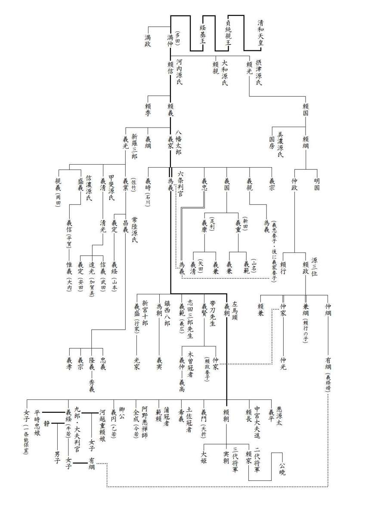

| これで読破！ 平家物語 巻十二 | |
| 三石由起子 | |
| genkosha (2014) | |
完訳 平家物語
百二十句本による
第百十一句から第百二十句


第百十一句 おほいとのさいご（大臣殿最後）
大臣殿最期
一
元暦二年五月七日の卯刻、九郎大夫判官、大臣殿父子具し奉り、関東へぞ下られける。判官情深き人にて、道の程様々にいたはり慰さめ奉り給ひけり。
大臣殿、哀宗盛親子が命を申し宥めさせ給へかしと宣へば、判官、今度義経が勲功の賞には、ひたすら御二所の御命を申し宥めばやとこそ存じ候へ。よも失ひ奉るまでの事は候はじ。いかさまにも奥の方へなんどぞ下し参らせ候はんずらんと申されければ、大臣殿、「東の奥、遠国の下、夷が住むなる蝦夷が千島なりとも、」と宣ひけるぞいとほしき。
昔は名のみ聞きし海道の宿々、名所名所見給ひて、日数経れば、駿河国浮島が原にぞかかり給ふ。是は浮島が原と申しければ、大臣殿、
塩路よりたえぬ思ひを駿河なる 名は浮島に身をば富士のね
右衛門督、
我なれや思ひにもゆる富士のねの むなしき空の煙ばかりは
元暦二年五月七日の卯の刻、義経は宗盛父子を伴って関東へと出発した。義経は情け深い男だったので、道中宗盛を何かにつけて労わり、慰めていらっしゃった。
宗盛が、
「哀れ宗盛親子の命を申し宥めさせ給えかし。」
と助命を懇願すると、義経は、
「今度の義経の勲功の賞として、ひたすら御二所（＝宗盛と清宗）の御命をお願いしたいと思っております。よもや、死罪とはなりますまい。どうやってでも、奥州などへの流罪ほどには出来ましょう。」
と、遠流はあっても処刑はないと慰めた。
その言葉を信じた宗盛が、
「東の奥、遠国の下、夷が住む蝦夷の千島でも。」
とおっしゃるのは、哀れなことであった。
かつては、名前だけを知っていた海道の宿々や名所などを通り見て、駿河国、浮島が原に来た時、宗盛は歌を詠んだ。
塩路よりたえぬ思ひを駿河なる
名は浮島に身をば富士のね
右衛門督・清宗の歌はこうである。
我なれや思ひにもゆる富士のねの
むなしき空の煙ばかりは
宗盛の歌には「思ひ」の「ひ」に富士山の「火」を掛け、「思ひをする」の「する」に「駿河」の「駿」を掛け、「浮き名」を意味する「浮く」に地名の「浮島」を掛けている。命の危ない身に「富士」と「不死」とを掛けて、縋るような地名づくしで、楽観的な希望が見える。清宗の歌には地名を折りこんだ遊び心はなく、心情を歌う。立ち上る富士山の煙のように我が思いも消えて行くのだろうという我が身の状況を現実的に把握していた。
二
さる程に人々鎌倉へ入り給ふ。判官、いかばかりか二位殿合戦の様をも尋ね給はんずらんと思ひまうけて下られたりけるに、源二位殿当時いたはりける事有りとて、対面もし給はず。判官、さこそ恨めしく思はれけめ。
梶原平三景時に仰せて、大臣殿父子をば源二位のおはしける所より、庭を一つへだてて、対の屋に置き奉り、比企藤四郎能員をもつて申されけるは、まつたく頼朝平家に意趣を思ひ奉らず、池の禅尼いかに申され候ふとも、故太政入道殿御許し候はずは、頼朝いかでか命生きて、廿四年の春秋をば送り候ふべき。されども悪行法に過ぎ、天の責のがれがたうして、攻め奉れとの詔命を蒙る上は、子細申すに所なし。か様に又見参つかまつるこそ、誠に本位にては候へと申すべしとてやられければ、藤四郎能員参りて、此のよし申さんとすれば、大臣殿居直りて、かしこまつて聞かれけるこそ口惜しけれ。
国々の大名小名並みゐたり。その中に平家の重代相伝の家人ども多かりけるが、是を見て、あの心にてこそ西海の波の底にも沈み給ふべき人の、命生きて是まで下り給へ。今居直り、かしこまつてましまさば、命生き給ふべきかとてにくみあへり。
又ある者が申しけるは、「猛虎在深山即百獣震恐。及在檻穽乃中。揺尾而求食（猛虎は深山に在り百獣震恐す。檻穽の中に在るに及び、尾を揺がして食を求む）」と言ふ本文有り。さればいかに猛き将軍なれども、か様になりぬれば、心かはる習有り。されば大臣殿わるびれ給ふも理なりと申してこそ、恥をば少し助けけれ。
そうこうして鎌倉に入った。義経はどんなに壇ノ浦の合戦の話をしたいと思っていただろう。また頼朝も聞きたいに違いないと思っていただろう。しかし、頼朝は、
「身体の具合が悪い。」
と、義経と対面しようとはしなかった。
義経はその態度をどれ程恨めしく思ったろうか。
頼朝は、梶原景時に言い付けて、宗盛父子を、自分がいる場所から庭ひとつ隔てた対の屋に置いた。そして比企藤四郎能員に言伝でこう言わせた。
「この頼朝は、平家に対して何の含む所もない。いかに池の禅尼が庇ってくれたとしても、故太政入道（＝清盛）の情けがなかったならば、頼朝は今まで生きてはいられなかった。二十四年の春秋をおくることができたのは清盛のお陰である。だが、「悪行が法に過ぎ、天の責め逃れ難く」攻め奉れという詔命をいただいた上は仕方がないのである。こんなふうに会うのも本意ではない。」
藤四郎能員が参上してこれを伝える間、それを聞く宗盛がきちんと座りなおして、畏まっているのを見るのは何としても悔しかった。
国々の大名や小名が集まり、その中には平家の重代相伝の家人も多くいたが、それらの人々は、そのような心根だから海に沈むこともできずに、おめおめとここまで下って来たのだ、畏まっていれば命が助かるとでも思っているんだろうか、情けないことだと憎々しく思うのであった。
それでも、
「「猛虎深山に有る時は百獣恐れ、檻井に有るに及んでは、尾を動かして食を求む」猛虎は深山にあれば百獣に恐れられるが、檻の中に捕らえられれば尾を動かして餌をねだるというではないか、そんなもんだよ。大臣殿が悪びれるのも無理はない。」
と、弁護してその恥を少し助けたのである。
三
同じく六月九日九郎判官大臣殿父子を受け取り、都へ帰り上られけり。
大臣殿は、是にて既にいかにもならんずるかと思うたれば、再び都へ立ち帰る事の嬉しさよとぞよろこばれける。
右衛門督、若うおはしけれども心得給ひて、何か嬉しう候ふべき。都にて斬りて渡さんずる料にて候ふらんとて、帰り上る事を恨めしげにぞ宣ひける。
国々宿々を過ぎゆくに、ここにてもやここにてもやと思はれけれ共、尾張国野間と言ふ所にぞ着き給ふ。大臣殿、是は故左馬頭義朝が首を刎ねたる所なり。その墓の前にてぞ一定斬られんずらむ、大臣殿も右衛門督も思はれける所に、判官大臣殿父子を具し奉て、父の墓の前にて三度伏し拝み、草の陰にても、亡魂尊霊必ず是を見給ひて、御心をやすめ給へとぞ申されける。され共そこにても斬られず。大臣殿、今はかひなき命ばかりは助からんずるぞと宣へば、右衛門督、などか助かり候ふべき。当時は暑きころなれば、首の損ぜん様をはかりて、都近くなりて斬り候はんずらめとて、ひまなく念仏をぞ申されける。大臣殿をばすすめ奉り給ひけり。
六月九日、義経は宗盛父子を受け取って都に帰り上る。
裁定は下りたのである。宗盛は、もうこれで全て済んだと思い、どうなることかと思っていたが都に帰れるのだと喜んだ。
清宗は若かったが状況を察知して嬉しいはずもなかった。都で斬首となるに違いないと、帰り上るのを恨めしげにおっしゃった。
国々の宿場を通過しながら、処刑されるのはここでか、あそこでか、と思いながら尾張国の野間に到着した。
「この場所は、他でもない頼朝兄弟の父親である義朝の首を刎ねた所だ。さてはその墓の前で処刑されるのだな。」
と、宗盛も清宗も思っていると、義経はこの父子を連れて墓前に行った。
そうして、三度伏し拝んでから、
「草の陰にても、亡魂尊霊よ、必ずこれを御覧になって、御心をお休め下さい。」
と、父へ報告をしたのだった。
しかし、そこでも処刑は行われなかった。宗盛は、
「さては命が助かるようだぞ。」
と言うが、清宗は、
「どうして助かりましょうか。暑い時期ですから首の傷みを考えて、都近くでの処刑になるのでしょう。」
と、念仏を怠らず、宗盛にもそれをお勧めになる。
四
日数経れば六月廿日には、近江の国篠原の宿にぞ着き給ふ。
あくる日廿一日の朝より、大臣殿をも右衛門督をも引き分けて、所々に置き奉る。さてこそ親子の人、既に今日を限りにて有りけるよと、互に思ひあはれけり。出家は許されねば力に及ばず。判官三日路より人を先立てて、大原の本性房湛豪と言ふ聖を、大臣殿の善知識とす。近江の篠原に請じ下し奉り給ひけり。
既に斬り奉らんとするに、大臣殿、右衛門督はいづくにあるやらん、十七年が間、一日片時もたち離れず。水の底にも沈まずして、憂き名を流すもただ彼が故なり。死なば一所にてとこそ思ひしに、生きながら別れぬる事の悲しさよと泣かれければ、善知識の上人、さなおぼしめされ給ひそ。最期の御有様は御覧ぜんについても、互に御心にかかるべし。此の世は生者必滅の国なれば、生まるる者は必ず死す。会ふ者は定まつて離るる習有り。釈尊いまだ栴檀の煙をまぬかれ給はず。いはんや凡夫においてをや。生を受けさせ給ひてよりこのかた、楽しみ栄えて昔も今も類なし。御門の御外戚にて、丞相の位に至り、今生の栄花残る所なし。今かかる御目に合はせ給ふも、ただ前世の御宿業なり。世をも人をも恨みおぼしめすべからず。楽しみ尽きて悲しみ来たる。天人猶五衰の日にあへりとこそ申し候へ。今年三十九にならせおはしませば、三十九年を過ぎ給ひけるも、おぼしめしつづけて御覧候へ。ただ一夜の夢のごとし。この後七八十を過ごさせ給ふとも、思へば程や候ふべき。秦の始皇、奢をきはめしも、遂に驪山の塚に埋もれ、漢の武帝の命を惜しみ給ひしも、むなしく杜陵の苔に朽ちにき。
楽しみは必ず悲しみのもとゐなれば、生は又死の因なり。されば仏は、我心自空、罪福無主、観心無心、法無住法と説かれたり。善も悪もただ空なりと観じつるが、まさしく仏の御心にはあひかなふ事にて候ふなるぞ。いかなれば、弥陀如来は五劫が間思惟して、おこしがたき願をおこしましまし、我等を引摂し給ふに、いかなる我等なれば、億々万劫が間、生死に輪廻して、宝の山に入りて手を空しくせむ事は、恨みの中の恨み、愚なるうちの口惜しき事に候はずや。ゆめゆめ余念をおこさせ給ふなとて、戒を授け奉り、しきりに念仏をすすめ申さる。
大臣殿たちまちに妄念をひるがへして、西方に向かい、高声に、念仏となへ給ふ所に、橘右馬允公長と言ふ者、太刀を抜きてうしろへまはるを見給ひて、念仏をとどめて、右衛門督も今は既にかうかと宣ひも果てざるに、大臣殿の御首は前にぞ落ちにける。是を見て、善知識の上人も、公長も、涙せきあへず。
いはんや此の公長は、平家の重代相伝の家人なり。なかにも新中納言知盛の卿のもとに、朝夕祗侯の侍なりしが、世にあらんとて東国へ下り、源氏につきて、一家の主の首を斬るこそ口惜しけれ。
その後善知識の上人、右衛門督殿へ参りて、先のごとく、戒を授け奉り、念仏すすめ申さる。右衛門督念仏をとなへ給ふが、そもそも大臣殿の最期の御有様はいかにおはしけるやらんと宣へば、善知識の上人、よに目出たくこそ渡らせ給ひつれと宣へば、なのめならずよろこびて、さらばとく斬れとて、首をのべてぞ斬らせられける。
首は判官持たせて都へ入る。むくろは善知識の聖の沙汰にて、皆孝養してんげり。
日数が重なり、六月二十日には、近江国、篠原の宿に到着した。
翌二十一日の朝からは父子は別々に引き離された。さては処刑の日だろうと、親子はそれぞれに思い合った。出家は許されないので仕方がない。義経は旅程の三日前から人を先立てて、大原の本性房湛豪という聖を、宗盛の善知識として、この近江の篠原に請じ招いていた。
すでに、斬首されようとしているというのに宗盛は、
「右衛門督はどこにいるか。十七年の間、一日も離れたことがない。水の底にも沈まずに、生き恥を晒したのも息子がいればこそのことだったのだ。死ぬ時は一緒だと思っていたが、生きながら別れているのは悲しい。」
と、お泣きになる。善知識の上人は、
「そんなことはお考えなさいますな。最期のご様子は、ご覧になってもお互いに心にかかるだけでございます。この世は生者必滅ですから、生まれた者は必ず死ぬのです。会う者は決まって別れるのです。釈尊でさえ栴檀で火葬になって死を逃れませんでした。まして凡夫はなおさらです。生を受けて以来、前代未聞の楽しみと栄華を極められました。帝の御外戚として丞相の位に至り、今生の栄華を余すところなく味わわれたのです。このような目にお合いになるのも、ただ前世の御宿業なのです。世も人もお恨みになってはいけません。楽しみが尽きて悲しみが来ただけのこと。天人でさえ五衰の兆候が現われる日が来ると申します。今年三十九歳になられるのですから、その三十九年の年月を思い出してご覧なさいませ。ただ一夜の夢のようではありませんか。今後、七、八十年を生きたとしても同じことです。秦の始皇帝は奢侈を極めましたが、結局は驪山の塚に埋もれました。漢の武帝は命を惜しみましたが、今は空しく杜陵の苔となって朽ちております。
楽しみは必ず悲しみの原因となり、生はまた死の原因なのです。そうであればこそ仏は、「我心自空」「罪福無主」「観心無心」「法無住法」と説かれたのです。善も悪もただ空であると観念なさるのが、正しく仏の御心に適うことです。弥陀如来が五劫もの長い時を思惟して難しい願を起こし、我等を導いて下さるというのに、我等が億々万劫もの間、生死に輪廻し、宝の山に入っていながら何も手に入れられないとなれば、それは恨みの中の恨み、愚かな上にも口惜しいことではありませんか。ゆめゆめ余計なことを御考えになってはなりません。」
と、説いて、戒を授け、しきりに念仏をお勧め申し上げる。
突然、宗盛は妄念が晴れたと見えて、西方に向かって声高に念仏を唱え出した。それを見て取った橘右馬允公長が太刀を抜いて後ろへ回ったところ、気付いた宗盛は念仏を止めて、
「右衛門督も今は既にこうか。」
とおっしゃったが、その言葉も終わらぬうちに宗盛の首は前に落ちた。善知識も公長も涙が止まらない。
特にこの公長は平家の重代相伝の家人であった。新中納言・知盛に朝夕仕えていたが、一角の者になろうとして東国へ下り、源氏に仕えていたのだが、一家の主の首を斬る事になったのである。いかにも口惜しいことであった。
その後、善知識の上人は、右衛門督殿（＝清宗）の所に行き、宗盛にしたように戒を授けて念仏をお勧め申し上げた。
右衛門督は念仏を唱えられたが、
「大臣殿のご最期の御有様はどのようでしたか。」
と、おっしゃると、善知識の上人が、
「大層ご立派なご最期でした。」
と、お答えしたので、非常にお喜びになって、
「さらば、とく斬れ。」
と、首を差し出して斬らせたのだった。
首は都へ持たせて帰る。遺骸は善知識に任せて皆で孝養した。
五
同じく廿三日、検非違使ども、三条河原に行き向かつて、大臣殿の父子の首を受け取り、三条を西へ、東の洞院を北へ渡して、獄門にぞかけられける。法皇も東の洞院に御車を立て、叡覧ある。さしも御いとほしみ深かりし近臣にておはせしかば、法皇もさすがに哀におぼしめして、御涙せきあへさせ給はず。三位以上の人の、首を獄門にかけらるる事は、異国にはその例もやあるらん、本朝にはいまだ先蹤を聞かず。されば悪右衛門督信頼は希代の朝敵なりしかば、首を刎ねられたりけれども、遂に獄門にはかけられず。今平家にとつてぞかくは有りける。西国より帰りては生きて六条を東へ渡され、東国より上りては、死して三条を西へ渡され給ふ。生きての恥、死しての恥、いづれかさて劣るべき。
二十三日、検非違使が三条河原に向かい、大臣殿父子の首を受け取って三条を西へ折れ、東の洞院を北へ引き廻して獄門にかけた。後白河法皇も東の洞院に御車を立てて叡覧あった。可愛がっておられた近臣だったので、法皇もさすがに哀れに思召し、御涙を流される。三位以上の人の首が獄門にかけられる事など、異国は知らず、我が国にはまだ先例を聞かない。悪右衛門督・信頼さえ、希代の朝敵であったが、首を刎ねられても獄門にはかけられなかった。今、平家はこのようなことになっていた。西国から帰った時には、生きて六条を東へ引き廻され、東国から帰った時には、死んで三条を西へ引き廻されたのである。生きての恥と、死後の恥と、どちらがましであろうか。
第百十二句 しげひらのさいご（重衡の最期）
重衡最期
一
本三位の中将重衡は、狩野介に預けられて、去年より伊豆の国におはしけるが、鎌倉殿、南都の大衆、此の人をば定めて見たかるらん。此の次に渡すべし。源三位入道頼政の孫、伊豆の蔵人の大夫頼兼に仰せて、南都へぞ渡されける。都へは入れられず。山科より醍醐路へぞ渡されける。
三位の中将、守護の武士に向かつて宣ひけるは、我一人の子なければ、此の世に思ひ置く事も無きが、年来あひ慣れたりし女房の、日野と言ふ所に有りと聞く。うち過ぐる様にて、立ち寄りて互に姿を今一度見もし見えもせばやと思ふはいかに、此の事が心にかかりて、冥途もやすく行くべしとも覚えずと宣へば、守護の武士、やすき御事にて候ふとて、日野にて、太夫の三位の宿所を尋ねて、大納言の典侍殿の御渡り候ふやらん。本三位の中将殿の只今奈良へ御通り候ふが、此のつまにて立ちながら今一度見参らせんと候ふと言はせければ、北方聞きもあへ給はず、いとほしやいとほしやとて、走り出で給ひたれば、藍摺の直垂着たる男の、痩せくろみたるが、縁に寄りゐたるぞそれなりける。北方、いかにや夢かうつつか、是へ入らせ給へと宣ひもあへず、御簾のうちに倒れ伏してぞ泣かれける。
三位の中将、御簾うちかついで入り給ひたれ共、互に涙にむせて、しばしは宣ひ出だす事もなし。やや有りて、三位の中将涙押しのごひて、重衡去年一谷にて何にもなるべかりし身の、せめての罪のむくひにや、生捕にせられて、京鎌倉引きしろはれて、恥をさらし、遂には奈良を滅ぼしたりし、伽藍の敵なりとて、既に渡され候ふぞや。今一度見奉り候はばやと思ふほかは、今生に取り止むる事なし。か様に見奉れば、死出の山をもやすく越えなんと思ふ事こそ嬉しけれ。人にすぐれて罪深うこそあらんずらめども、此の世には後世とぶらふべき者も覚えず、いかなる有様にておはすとも、忘れ給ふなよ。出家をもして、髪をも形見に奉らばやとは思へども、それも許されぬぞとて泣き給へば、北方、軍は常の事なれば、必ず去年の二月七日を限りとも知らずして、別れ奉りしかば、越前三位の上の様に、水の底にもと思ひしかども、先帝の御事が心苦しかりし上、まさしく此の世におはせぬとも聞かざりしかば、今一度見奉る事もやと、今日までは有りつるに、既に限りにておはすらん事の悲しさよ。もしやと思ふ頼みも有りつるものをとて、泣き給へば、三位の中将、昔の姿を変へずして、互に見奉りし事こそ嬉しけれ。慰さむ事は、夜を重ね、日を送るとも尽くすべからず。奈良へも遠く候ふ。武士共の待つらんも心なし。
暇申さんとて出で給へば、北方、泣々袖に取り付きて、しばらく申すべき事有りとて、袷の小袖に新しき浄衣を取り添へて、御姿のいたくしをれて見えさせ給ふに、是を召せとて、着せ奉り給へば、三位の中将、是を着かへて、もと着給ひたるは形見に御覧ぜよとて置かれけり。
北方、それもさる事にて候へ共、はかなき筆の跡こそ、朽ちぬ形見にては候へと宣へば、御硯召し寄せて、一首の歌をぞ書かれける。
せきあへぬ涙のかかる唐衣 後の形見に脱ぎぞかへぬる
北方の返歌に、
脱ぎかふる衣も今は何かせん 今日を限りの形見と思へば
三位の中将、契あらば、後の世にては生まれあひ奉らん、一つ蓮にと祈らせ給へと、涙おさへて出で給ふ。北方、走りもついておはしぬべくはおぼしめされけれども、それもさすがなれば、御簾のうちに倒れ伏してぞ泣かれける。その声庭まで聞こえければ、三位の中将、先へと急ぐよしにておはしけれども、馬をもすすめ給はず、泣かれけるこそ哀なれ。
本三位中将・重衡は、一の谷で生け捕りになって狩野介に預けられ、去年から伊豆国におられたが、鎌倉殿（＝頼朝）は、南都の大衆が東大寺、興福寺を炎上させた張本人としてこの人を見たいだろうと、奈良へ身柄を送ることにした。護送は、源三位頼政の次男に当たる伊豆蔵人大夫・頼兼である。都には入らず、山科から醍醐路を通った。
重衡は警護の武士に、
「私には一人の子もいないので、この世に未練もないが、長年連れ添って来た女房（＝大納言典侍）が、日野という所にいると聞く。途中であるから立ち寄って互いに姿をもう一度、見もし、見えもしたいと思うのだがどうか。これが心にかかっては、冥土にもおいそれとは行けぬような気がするのだ。」
と、言うのであった。警護の武士達は、
「お安い御用でございます。」
と、許可が出たのである。日野の宿所を尋ねて、
「大納言典侍殿はこちらにおいでか。本三位の中将殿が奈良へ行かれるところだが、通り道であるから短い時間ながらもう一度、面会させようと思うが。」
と、言わせると、北の方は聞き終わらぬうちから、
「いとおしや、いとおしや。」
と、走り出て来られたが、見れば藍摺の直垂を着て、痩せ細った黒い男が縁に寄って座っているのであった。
それが夫だったのである。北の方は驚いて、夢か現か、どうしたことかと、
「こちらにお入り下さい。」
とも言えず、御簾の中に倒れ伏してお泣きになった。
重衡は、警護の武士の目を憚って、御簾を担ぐような恰好で中にお入りになったが、お互いに涙にむせて物も言えない。しばらくして重衡は、涙を拭うと、
「一の谷で死ぬべき我が身であったが、せめてもの罪の報いに生け捕りになって都から鎌倉へ引き立てられ恥をさらした。今度は奈良を滅ぼし、伽藍を炎上させた敵として引かれて行くのだ。今日まで生きていたのは、ひと目お前に会いたいとの思い以外はない。今こうして会えた以上は、喜んで死出の山を越えることができる。罪深い身ではあるが、もはやこの世に後世を弔う者もいない。どうなろうが忘れてくれるなよ。出家して髪を形見に渡したいと思ったが、それも許されぬぞ。」
と、お泣きになる。北の方は、
「戦は常のことですから、去年の二月七日を最後の日とも知らずにお別れしてしまいました。越前の三位（＝通盛）の北の方のように、水底へ沈もうとも思いましたが、先帝のことも心にかかり、またあなたが亡くなったとも聞きませんので、もう一度お会いすることもできるかと今日まで生きて参りましたのに、これが限りとは悲しくてなりません。もしやと思う頼みもありましたのに。」
と、お泣きになった。重衡は、
「昔の姿のまま、出家もせずにお互いに会えたのは嬉しいことだ。これ以上、夜を重ね、日を送っても慰めにはならぬ。奈良も遠い。武士共が待っているのもせわしいことだ。暇申さん。」
と、お出になろうとすると、北の方は泣きながら袖に取り付いて、
「しばらくお待ち下さい。申し上げる事がございます。」
と、袷の小袖に新しい浄衣を取り添え、
「御姿があまりにも萎れてお見えになりますので。これをお召し下さいませ。」
と、着替えさせなさった。重衡は着替えてから、
「今まで着ていた物は形見にして御覧ぜよ。」
と、置かれる。
北の方は、
「それもそうでございますが、せめて筆の跡を朽ちぬ形見に頂戴したいと存じます。」
と、おっしゃる。重衡は、御硯を召し寄せて、一首の歌を詠んだ。
せきあへぬ涙のかかる唐衣
後の形見に脱ぎぞかへぬる
（とどめない涙のかかった唐衣を後の形見に脱ぎ替えておくよ）
北の方の返歌はこうである。
脱ぎかふる衣も今は何かせん
今日を限りの形見と思へば
（脱ぎ替えた衣も今は何になりましょう。今日を限りの形見なのです）
重衡は、
「約束したではないか。後の世で生まれ変わってまた会おう。同じ蓮に生まれるよう祈っておいで。」
と、涙を押さえてお出になった。
北の方は、走ってついて行きたいと思われたが、それもさすがに出来かねて、御簾の中に倒れ伏してお泣きになった。その声が庭まで聞こえたので、重衡は先を急ごうとしていた馬も進められずにお泣きになった。哀れなことである。
二
南都の大衆、三位の中将を受け取りて、東大興福両寺の大垣引きまはし僉議しけるは、そもそも此の重衡の卿は、重犯の悪人たる上、三千五刑のうちにも漏れ、修因感果の道理の極まりをなせり。掘頸にやすべき、鋸にてや切るべきとぞ申しあへる。老僧共申しけるは、ただし伽藍を破滅せし時、やがて生捕にもしたらば、もつともさこそすべけれ共、遥に年月を経、武士の手より渡したるを、さ様にせんには、僧徒の法に穏便ならず。ただ守護の武士に返して、木津川の辺にて斬るべしとて、又武士の手へぞ渡しける。
八条女院に、木工允政時と申すは、三位の中将のもと召し使はれし侍なり。是を聞き、最期の有様今一度見奉らんとて、鞭をあげて馳せてゆく。只今すでに斬り奉らむとする所に、馳せ着いて、馬より飛んでおり、人の中を押しわけ押しわけ参りけり。三位の中将、是を見て、いかに政時か。さん候ふ。重衡只今最期にてあるぞ。いかにしても今一度仏を拝し奉り、斬らればやと思ふはいかがすべきと宣へば、やすき御事にて候ふとて、守護の武士に、しばらく候へと申し述べて、走りまはり、仏を尋ね奉る。或る古堂より仏を一体迎ひ奉り、出で来たる。さいはひに阿弥陀にてましましけり。河原の砂に据ゑ奉り、政時が狩衣の左右の袖のくくりを解きて、仏の御手にかけ奉り、五色の糸と観じて、三位の中将に控へさせ奉る。
三位の中将、仏を拝し奉り、申されけるは、我不慮に伽藍焼滅の余殃にまとはる。ただし達多が逆心有りしも、天王如来の記別に預る。閻王が悪逆もすなはち善根の身を得る。願はくは悪業をひるがへし、安養浄土へ引導し給へと、念仏高声にとなへて、首をのべてぞ斬られける。
日来の悪行のにくさはさる事なれども、今日の此の有様を見て、守護の武士も、千万の大衆も、皆袖をぞ濡らしける。首をば般若寺の大卒都婆の前に釘付けにこそかけられけれ。治承の合戦の時、ここに打ち立つて、伽藍を滅ぼしたりし故なり。
北方、大納言の典侍殿は、哀や三位の中将の、たとひ首は斬られたりとも、むくろは捨ててこそ置かんずらめ。何とかして是を取りて孝養せばやとて、観音冠者、地蔵冠者と言ふ中間、十力法師と言ふ力者を召して、輿を迎ひに遣はしたれば、げにもむなしう捨て置きたる。むくろを輿に舁き入れ奉り、日野へ帰り参りたれば、北方走り出でて、むなしき姿を見給ひて、いかばかりの事か思はれけん、二目とも見給はず、やがて引きかづいでぞ臥されける。
首をば大仏の聖、俊乗上人、衆徒に乞うて日野へやらる。首もむくろも煙になし、骨をば高野へ送られけり。墓をば日野にぞ建てられける。
法界寺と言ふ寺より僧を請じて、様を変へ、三位の中将の後世をぞとぶらひ給ひける。
南都の僧達は重衡を受け取って、東大寺、興福寺、両寺の大垣を引き廻そうと僉議したが、
「そもそも此の重衡卿は、重犯の悪人である上に、三千五刑あると言われる刑罰の中にも入らぬような大罪を犯したのである。善悪の因果は我が身に帰るという道理の極まりをしたのである。「掘頸にやすべき、鋸にてや切るべき」」
との意見まで出された。
しかし、ある老僧が、
「伽藍を破滅した時にすぐに生け捕りにでもしていたのならそのような処置もあるだろうが、あれから年月が流れ過ぎている。いったん武士の手に渡り、その武士の手から返されたものを、そのように処するのは僧徒として穏便なことだとは言えない。このまま武士の手に返して木津川の辺りで斬るのが順当であろう。」
と、また武士の手に返されたのであった。
この噂を聞いたのが木工允政時である。政時は、八条の女院で重衡に仕えた武士であった。最期のお姿をもう一度拝見しようと、鞭をあげて馳せて行く。今や斬られるという瞬間に馳せ着いて、馬から飛んで下り、人の中を押し分け押し分けして、参じたのであった。これを見て重衡は、
「いかに政時か。」
「さん候ふ。」
「重衡只今最期にてあるぞ。何とかもう今一度、仏を拝し奉って斬られたいと思うが、いかがすべき。」
「やすき御事にて候。」
政時は、武士をしばらく待たせて走り回り、仏を捜し廻った。
そうして、ある古堂から一体の仏を迎えて帰る。幸運なことに、この仏は浄土に導く阿弥陀如来であった。政時は、これを河原の砂に据えると、狩衣の左右の袖の括りを解いて仏の御手にかけ、これを五色の糸だと「観じて」、その一方の端を中将にお持たせになった。
重衡は、この仏を拝して、
「我れ、不慮に伽藍焼滅の余殃を蒙った。だが、達多は逆心があっても天王如来の記別に預った。閻王の悪逆も、善根の身を得るのである。願わくは悪業を翻して、安養浄土へ引導し給え。」
と、念仏を声高に唱えながら首を差し出して死についた。
日頃の恨みはそれとして、この様子を見た警護の武士達も、千万の大衆も、誰もが袖を濡らした。
首は般若寺の大卒塔婆の前に釘付けにされた。治承の合戦の時に、この場に立って伽藍を滅ぼしたからである。
北の方は、首は取られても遺骸は捨て置かれるだろうから、何とかして取り戻して供養したいと思われた。観音冠者、地蔵冠者という中間二人、十力法師という力者を召して輿を迎えに遣わすと、案の定、身体はうち捨ててあったのである。遺骸を輿に載せて日野へ帰ると、北の方が走り出てその空しいお姿を御覧になったが、何を思われたのか、二度とは御覧にならずに、そのまま衣を被って臥せてしまわれた。
その後、首も大仏の聖や俊乗上人が、衆徒に頼み込んで日野へ遣った。首も遺骸も煙にして、骨は高野に送り、墓は日野に建てた。
それから法界寺という寺から僧を呼んで出家し、重衡の後世を弔ったのである。
第百十三句 大ぢしん（大地震）
大地震
一
同じく七月九日の午刻ばかり、大地おびたたしう動いてややひさし。怖ろしなんどもおろかなり。赤県のうち、白河のほとり、六勝寺九重の塔をはじめて、あるいは倒れ、あるいは破れ崩る。在々所々、皇居民屋、全きは一宇もなし。あがる塵は煙のごとく、崩るる塵は鳴神のごとし。天くらうして日の光も見えざりけり。老少ともに魂を消し、鳥獣ことごとく心をまよはす。
遠国も近国も又かくのごとし。山崩れて河を埋み、海傾いて浜をひたす。沖漕ぐ船は波にただよひ、陸行く駒は足の立てどころをまよはす。大地裂けて水湧き出で、岩割れて谷へころぶ。洪水みなぎり来たれば、岡に登りてもなどか助かるべき。猛火燃え来れば、河をへだてても支へがたし。鳥にあらざれば空をもかけがたく、龍にあらざれば雲にも入りがたし。ただ悲しかりけるは大地震なり。
四大種のなかに、水火風はつねに害をなせども、大地は異なる変をなさざるに。
法皇は新熊野へ御幸なつて、御花参らせ給ひけるが、此の大地震出で来て、家ども震ひたふされ、人多く打ち殺され、触穢出で来にければ、六条殿へ還御なる。天文博士馳せ参りてののしる事限りなし。法皇は南庭に握屋をたててぞましましける。
主上輿に召して、池のみぎはに出御なる。夕さりの子刻には大地必ず打ち帰るべしと御占ひ有りければ、安堵する者上下一人もなし。遣戸障子を立てて、天の鳴り地の動く度には、只今ぞ死ぬるとて、高く念仏申しける声、所々におびたたし。
七八十、八九十の者共も、世の滅すると言ふ事はさすがに昨日今日とは思はざりつるに、こはいかにせんとて、喚き叫ぶ。是を聞きて、幼き者共も、泣き悲しむ。
文徳天皇の御時、せいゑい三年三月十三日の大地震は、東大寺の大仏の御頭ぐし落ちたりけるとぞ承る。朱雀院の天慶二年四月の大地震には、主上五丈の握屋をたててぞましましけると見えたり。開闢よりこのかた、かかる事あるべしとも覚えず。平家の怨霊にて世の失せべきかとぞ申しける。
建礼門院は、たまたまたち宿らせ給ふ吉田の御房も、此の大地震に傾き破れて、いと住ませ給ふべきたよりも見えず、何事も昔には変り給ひたる憂き世なれば、情をかけ奉り、是へと申さるる人もおはさず。みどりの衣のしほじみ、宮門を守るだにもなし。心のままに荒れたる籬は、しげ野のほとりよりも露けくて、折知顔に、いつしか虫の声々恨むらんも哀なり。夜もやうやう長くなりければ、いと御眠りもさめがちに、明かしかねさせ給ひけり。尽きぬ御物思ひに、秋の哀さへうちそひて、しのぎがたくぞおぼしめす。
元暦二年（１１８５年）七月九日の午の刻、大地震が起こった。大地が酷く動いて時間も長かった。恐ろしいという言葉を使うのも愚かである。赤県（＝王城付近の地、畿内）、白河の辺りでは、六勝寺の九重の塔を始め、多くの寺社が倒れたり、破壊された。皇居から民家まで無事な建物は一つもなかった。塵が煙のように上がって、崩れる音は雷のようだった。天は暗くなって太陽も見えなかった。老いも若きも魂が消え、動物たちも本能を失った。
畿内ばかりでなく遠国でも近国でも同様だった。山は崩れて河を埋め、海は傾いて浜を浸した。沖に漕ぐ船は波に漂って、陸を行く駒は足の踏み場に迷った。大地が裂けて水が湧き出し、岩が割れて谷へ転がり落ちた。洪水が漲って押し寄せ、丘に登ってもどうして助かろうか。猛火が広がって、河を隔てても防ぐことができない。鳥ではないので空を飛ぶわけにもいかず、龍ではないので雲に入ることもできない。悲惨なのは大地震であった。
四大種のうち、水と火と風はいつでも害をなすが、大地は異なる変化をしないはずなのに。
後白河院は、ちょうど新熊野に御幸なさって御花を供えておられたが、この地震で家が倒れ、大勢が打ち殺されて「触穢」となったので、六条殿へ還御なさった。天文博士までが馳せ参じて、大騒ぎであった。法皇は南庭に仮屋を建てて移り住まれた。
後鳥羽天皇は輿で池のみぎわにまで避難された。天文博士が、「今夜の十二時頃、また強い揺り返しがある」と占ったので誰も安心できなかった。
「天文博士」は、陰陽寮に属し、天文や暦数に関することを司る。当時の天文博士は安倍広基であった。
遣戸も障子も閉めて、天が鳴り、地が動く度に、今死ぬような気がして声高に念仏する声が、あちこちから聞こえていた。
七、八十歳、八、九十歳の者達も、世が滅ぶとしてもさすがに昨日や今日のこととは思わなかったが、これはどうしたことかと喚き叫んでいた。またその声を聞いて幼い者達が泣き悲しむのである。
文徳天皇の御時、斎衡三年三月十三日の大地震は、東大寺の大仏の頭が落ちたそうである。朱雀院の天慶二年四月の大地震には、主上は五丈の握屋を立ててそこにお住まいになったらしい。
我が国開闢以来、こんなことはなかったのではないか。これは平家の怨霊で、世の中が滅亡するのだろうとの噂が飛んでいた。
建礼門院がたまたま御宿にされた吉田の御坊も、この地震で倒壊して住める状態ではなかったが、もはや平家の世でもない、こんな状態であるから、あれこれと心配して、こちらにお出で下さいと申し出る人もいなかった。緑の衣を着た六位の官人もなく、宮門を守る者もない。荒れ放題に荒れた籬は、茂野よりも露けく、折知り顔に虫が悲しげに鳴いていた。夜もだんだん長くなり、御眠りになっても醒めがちで夜を明かしかねておられた。尽きぬ物思いに秋の哀れが加わって、耐えられないほどの思いをなさる。
水原一の解説を引く。
「この地震について、当時、権大納言正二位で、内大臣も務めた中山忠親は、五十年来経験のない激震であると『山槐記（＝中山の「山」と、大臣家の唐名「槐門」から命名した中山忠親の日記）』に記録している。この地震は、対策として文治改元が行われるほどであったが、その後も余震は続いた。
この間、八月十九日には院の御所（＝六条殿）で仁和寺の法親王による孔雀経法が行われた。孔雀明王は明王であるが憤怒の相を取らない。孔雀は毒蛇を食うと言われ、一切所毒を滅するとされる。八月二十八日は大仏開眼供養で後白河院も参加しているが、中山忠親の記録が途切れる九月二十九日まで、これ以後連日のように地震の記事が見られる。この地震が起きる直前の七月三日、安徳天皇と戦没士卒の霊を弔う一堂を長門に建立する詮議がなされていたが、その直後の地震だったので平家の死者の恨みだと考えるのは当然だった。この後、崇徳天皇を始め、数々の怨霊が後白河院を苦しめる。建久二年（１１９１年）閏十二月には、長門に一堂の建立が決定されるが、翌年三月十三日、院は六十六歳の生涯を閉じた。」
第百十四句 こしごえ（腰越）
腰越
一
同じく八月九日、九郎判官伊予守になる。そのほか源氏五人受領す。甲斐源氏安田三郎義貞遠江守、加賀美次郎遠光信濃守、一条次郎忠頼駿河守、大内太郎維義相模守、信濃源氏平賀の四郎義信武蔵守にぞなされける。
そのころ九郎判官鎌倉より討たるべきとぞ聞こえける。判官内々宣ひけるは、弓矢取る身の親の敵を討ちつる上は、何事か是にすぎたる思ひ出あるべきなれども、関より東は源二位殿のおはすれば申すに及ばず、西国は義経がままとこそ思ひつるに、是こそ思ひのほかの事なれ。わづかに伊予の国、没官領廿余箇所賜はつて、侍十人付けられたりしも、鎌倉殿内々宣ふ事有りければ、皆鎌倉へ逃げ下り、旗差の料にとて付けられたる、足立新三郎ばかりぞ候ひける。源二位と兄弟なる上、ことに父子の契をして、浅からず、去年の正月、木曾左馬頭追討せしよりこのかた、度々の合戦をして、平家遂に攻め落とし、四海をすましめ、一天をしづめて、勲功比類なき所に、いかなる子細有りて、鎌倉源二位か様に恨みは思ひ給ふらんと、上一人より、下万民にいたるまで不審をなす。是は今年の春、渡辺にて船揃への有りし時、判官と梶原と、逆櫓立てう立てじの論をし、大きに努られし事を、梶原本意なき事にして、讒言して、遂に失ひけるとぞ聞こえし。
世をしづめ給ひて、鎌倉殿、今は頼朝を思ひかくる者、奥の秀衡ぞあらん。そのほか、覚えずと宣へば、梶原申しけるは、判官殿も、おそろしき人にて御渡らせ給ひ候ふものを。うちとけ給ひては、かなふまじきよし申しければ、頼朝もさ思ふなりとぞ宣ひける。さればにや、去んぬる夏のころ、平家の生捕共あひ具して、関東へ下向せられける時、腰越に関を据ゑて、鎌倉へは入れらるまじきにて有りしかば、判官本意なき事に思ひて、少しもおろかに思ひ奉らざるよし、起請文書きて参らせられけれ共、用ゐられざれば、判官力に及ばず。
その申し状に曰く、
同じく八月九日、九郎判官・義経は伊予守になる。そのほか源氏の五人が受領した。甲斐源氏である安田三郎義貞は遠江守、加賀美次郎遠光は信濃守、一条次郎忠頼は駿河守、大内太郎維義は相模守となり、信濃源氏である平賀の四郎義信は武蔵守になった。
その頃、九郎判官・義経が鎌倉に討たれるらしいという噂が聞こえて来た。義経は内々、
「武家が親の敵を討ったからには、それ以上の思いはない。関から東は源二位殿（＝頼朝）がおられるのだから言うまでもないが、西国はこの義経が思いのままに治めようと思っていたが、存外なことになった。僅かに伊予国と、没官領の二十余カ所を頂き、侍の十人を付けてもらったが、鎌倉殿から内々の指示があったらしく、皆、鎌倉へ逃げ下って旗差の料にされてしまった。足立新三郎だけがいるばかりだ。源二位と兄弟である上に、特別の父子の契りを結んで縁は浅くない。去年の正月に、木曾左馬頭・義仲を追討して以来、何度も合戦をし、平家も遂に攻め落とし、四海を穏やかにし、天下を鎮め、勲功も比類ない働きをしたのに、どんな事情があって鎌倉源二位は、こんなにも恨みに思っておられるのだろう。」
と、嘆き、また同じように帝から万民まで不審に思ったのである。
これは今年の春、渡辺で船揃えがあった時、義経と梶原とが逆櫓を立てる立てぬの論争となり、結果として義経が手柄を立てたのを梶原が根に持って、頼朝に讒言したので、遂に信用を失ったのだということである。
世を平定した鎌倉殿が、
「今や、この頼朝に逆らう者は、奥州の秀衡だけだろう。その他には思い当たらぬ。」
と、おっしゃると、梶原が、
「いやいや。判官殿（＝義経）も、恐ろしい男でございます。油断なさいますと、とんでもないことになります。」
と、申し上げたのであった。頼朝も、
「そうだな。そう思う。」
と、おっしゃった。
そういう訳であろうか、去る夏の頃、平家の生け捕り達を引き連れて鎌倉に下向した義経を腰越の関に留め置いたまま、鎌倉へお入れにならなかったのだ。義経は残念に思い、自分には少しも叛意はないのだと起請文を書いて送られたが、相手にされなかった。義経に為す術はなかったのである。
その起請文にはこう書いてあった。
二
源義経恐れながら申し上げ候ふ。意趣は、御代官のその一つに選ばれ、勅宣の御使として、朝敵を傾け、累代の弓矢の芸をあらはし、会稽の恥辱をきよむ。抽賞おこなはるべき所に、思ひのほかに虎口の讒言によつて、莫大の勲功を黙せられ、義経犯す事なくして咎を蒙る。功有りて誤り無しといへども、御勘気を蒙るの間、むなしく紅涙を流す。つらつら事の心を案ずるに、良薬口に苦し、金言耳にさかふるの先言なり。是によつて、讒者の実否を糾されず、鎌倉中に出入をとどめらるるの間、素意を述ぶるにあたはず。いたづらに数日を送り、此の時にあたつて、骨肉同胞の義を絶す。既に宿運きはまる所か。将又前世の業因か。
悲しきかな、此の条父母尊霊の再誕にあらずんば、誰か愚意の悲歎を申し開かんや。いづれの輩か哀憐の思ひを垂れられんや。事新しき申状、述懐にあひ似たりといへども、義経身体髪膚を父母にうけ、いくばく時節を経ず、故守殿御他界の後、みなし子となつて、母の懐中に抱かれ、大和国宇多郡龍門の牧におもむきしよりこのかた、一日片時も安堵の思ひに住せず、かひなき命ばかりながらへるといへども、京都の経廻治しがたきの間、諸国に流行せしめ、身を在々所々に隠し、辺土遠国を棲とし、土民百姓等に服仕せられ、しかれば幸慶たちまちに純熟して、平家の一族追討せんがために、上洛せしめ、手合せに木曾義仲を誅戮せしよりこのかた、ある時は峨々たる巖石に駿馬に鞭うち、敵のために身を滅ぼさん事を顧ず。ある時は漫々たる大海に孤舟に棹さし、風波の難を恐れず、屍を鯨鯢の鰓にかけ、甲冑を枕とし、弓矢を業とする本意、しかしながら亡魂の憤りをやすめ奉り、年来の宿望を遂げんとする事他事なし。あまつさへ義経五位尉に補任せらるるの条、当家の面目、稀代の重職、何事か是にしかんや。しかりといへども今悲しみ深うして嘆き切なり。仏神の御助けにあらずんば、なんぞ愁訴を達せんや。是によつて諸寺諸社の牛王宝印の裏をひるがへし、野心を挿まざる旨、日本国中の大小の神祇冥道を驚かし奉り、数通の起請文を書き進ずといへども、猶もつて宥免なし。
わが朝は神国なり。神は非礼を受けず。頼む所他にあらず、ひとへに貴殿広大の慈悲を仰ぎ奉り、便宜をうかがひ、高聞に達せしめ、秘計をはこばしめ、誤りなき旨、放免に預らば、積善の余慶家門に及び、永く栄花を、子孫に伝へ、年来の愁眉を開き、一期の安寧を得、讒訴を言はず。しかしながら省略せしむ。諸事賢察を垂れられんものをや。誠惶誠恐敬白。
元暦二年六月日
進上大膳大夫殿
とぞ書かれたる。
この起請文について、水原一はこう述べている。
「これは「腰越状」と呼ばれて、江戸時代から明治時代初期には、手習いの教科書として用いられた。様式や文言などが当時（＝源平時代）の披露文とは異なっているため、義経の原文ではないとする学者もいる。だが、功を誇り、頼朝の仕打ちを嘆き、肉親の情に切々と訴える様子は、『玉葉』に残された義経の発言と一致して、その心情をよく表わしている。」
源義経、恐れながら申し上げます。私は、あなたの代官に選ばれ、勅宣の御使として朝敵を懲らし、累代の武門の芸を見せて会稽の恥辱を清めました。勧奨あるべき所に、思いも寄らぬ恐ろしい讒言のため、莫大な勲功を言う事もできず、犯した罪もないのに咎を蒙っております。功は有り、誤りはありませんが、御勘気を蒙って紅涙を流しております。つらつらお心を推察しますと、良薬は口に苦し、金言は耳に逆らう、と申します。そのために讒言者の実否を糾弾される事もなく、私が鎌倉に入るお許しが頂けなかったのでしょう。それで率直な報告が出来ずにおります。無駄に数日を送って、今は、骨肉同胞の兄弟としての好を拒まれているのですから、既に宿運が尽きたということでしょうか。将又前世の業因でしょうか。
悲しきかな。このことは、父母の尊霊が生まれ変わって出て来てくれぬ限り、誰も私の真意を弁明し、悲嘆を分からせてくれる人はおりません。誰がこの哀憐の思いを垂れてくれるでしょうか。この申し状は、述懐のようですが、この義経は身体髪膚を父母に受けてから、いくらも経たぬうちに亡き左馬頭義朝殿が御他界となり孤児となりました。母の懐中に抱かれて大和国、宇多郡龍門の牧に赴いて以来、一日片時も安堵の思いで暮らしたことはありませんでした。甲斐なき命を長らえましたが京都を出歩くことは困難でしたので、諸国を廻り歩いて身を在々所々に隠し、辺土遠国を棲家として、土民百姓等に召し使われました。ところがたちどころに幸運が巡って来て、平家の一族を追討するために上洛し、手合わせに木曾の義仲を誅戮して以来、ある時は峨々たる山の巖石を駿馬に鞭うって、敵のために命を落とすことも考慮しませんでした。ある時は漫々たる大海に一人舟を出して、風波の難をも恐れず、屍を鯨鯢の鰓にかけ、甲冑を枕とし、武門の家の本意を尽くしました。亡魂の憤りを休め申し上げ、年来の宿望を遂げようとする意図の他は持ちませんでした。それが義経は五位尉に補任されて、まことに当家の面目、稀代の重職、これ以上の褒美は無いと思っております。そうではありますが、今の悲しみは深く、嘆きは切なるものなのです。仏神の御助けがなければ、愁訴することもできません。そこで諸寺諸社の厄除けの護符の裏に、野心を挿まないことを明記し、日本国中の大小の神々や冥界の仏達の来臨をお願いして数通の起請文を書いて進呈致しましたが、それでも宥免がありません。
わが朝は神国です。神は非礼を受けません。あなた以外に頼りにできる方がおりません。ひとえに貴殿の広大な慈悲を仰ぎ申し上げ、便宜を伺ってお耳に入れ、この義経のために秘かな手立てを巡らして、真実誤りなき旨をお伝えしてお許しを願いたいのです。それができれば、積善の余慶は家門に及び、永く栄華を子孫に伝えて、年来の愁眉を開いて一生の間の安らぎを得られましょう。決して讒訴されるようなこともございません。しかしながら全て省略致しました。諸事万端、ご賢察のほどお願い申し上げます。恐れ慎しんで、このことを申し上げます。
元暦二年六月日
進上大膳大夫殿
と、書いてあった。
第百十五句 ときただのとくだり（時忠能登下り）
時忠能登下り
一
さる程に改元有りて、文治と号す。
文治元年八月廿一日、鎌倉源二位頼朝の卿、片瀬と言ふ所に出でられけり。文覚上人の迎へとぞ聞こえし。故左馬頭殿の首、年来獄門にかかり、後世とぶらふ人もなかりしを、義朝の召し使ひける紺掻きの男、時の大理に会ひ、様々に申しうけ、兵衛佐殿流人にてましましけれ共、末頼もしき人なれば、世に出で尋ねらるる事もこそあらんとて、東山円覚寺と言ふ所に深く納めて置きたりけるを、文覚聞き出だし頸にかけ奉り、同じく鎌田兵衛が首をば、弟子が頸にかけさせ、紺掻きの男も具して下られけるとかや。
頼朝は御色召され、聖をば大床に置き奉り、わが身は庭上に立ちて、首を受け取り給ふぞ哀なる。是を見る大名小名涙を流さずと言ふ事無し。
岩間に道場を建て、御為と供養有り。勝長寿院と名づけらる。公家よりも哀におぼしめすにや、故左馬頭の塚に、内大臣正二位を贈らる。勅使は左大弁兼忠なり。頼朝武勇のほまれによつて、亡父まで贈官贈位に及びけるこそ目出たけれ。
そのうちに改元があって文治となった。
文治元年八月二十一日、鎌倉源二位・頼朝卿は、片瀬という所に出られた。文覚上人のお迎えとのことである。頼朝の父である故左馬頭殿（＝義朝）の首は、獄門にかかって、その後世を弔う人もなかったのだが、義朝の召し使っていた紺掻きの男が、時の大理に会って様々に陳情して申し受けたのである。兵衛佐殿（＝頼朝）は当時、流人であったので、将来が頼もしく思われる人もなく、いつか頼朝が世に出て、御首を尋ね求める事もあろうかと、東山の円覚寺に深く納めて置いたのであった。それを文覚が聞きつけて義朝の御首を頸にかけ、その乳母子であった鎌田兵衛政清の首を、弟子の頸にかけさせて、紺掻きの男も引き連れて、鎌倉に下って来たのだという。
頼朝は大変喜んで、文覚上人を大床（＝広廂）にお据えになり、御自分は庭に立って、この首を受け取られたという。しみじみとしたことであった。これを見た大名、小名はみな涙を流したのだった。
岩間に寺をお建てになって供養が行われた。勝長寿院と名付けられた。朝廷も哀れに思召されたのか、故左馬頭の塚に、内大臣正二位を贈られた。勅使は左大弁兼忠であった。頼朝の武勇の手柄で父・義朝が贈官されるとはめでたいことであった。
二
同じく廿三日、平氏の生捕、少々都に残りたるを、遠流すべしとて、配所を定めらる。平大納言時忠能登の国、内蔵頭信基佐渡の国へ、兵部少輔尹明隠岐国へ、讃岐中将時実上総国へ、法勝寺執行能円備後の国へ、二位僧都全真安芸の国へ、中納言律師忠快武蔵国へと定めらる。
平大納言時忠既に近日都を出づべしと聞こえしかば、預りの武士に、暇乞ひ給ひて、建礼門院の渡らせ給ふ吉田の御房へ参りて申されけるは、同じ都の内に候はば、つねに御行方をも承るべく候ふに、責重うして、既に配所におもむき候ふ。再び旧里に帰らん事今は有りがたくこそ候へとて、涙にむせばれければ、女院、誠に昔の名残とては、そればかりこそおはしつるに、此の後は誰かはとぶらふべきとて、御衣の袖をしぼり給ふ。
此の大納言と申すは、出羽前司具信が孫、兵部権大輔時信が子なり。建春門院の御兄にて、高倉の上皇の御外戚なり。楊貴妃が幸せし時、楊国忠が栄えたりしがごとし。八条二位殿も姉にておはせしかば、太政入道の小舅にて、兼官兼職心のままに思ふがごとし。子息時家中将になり、我正二位の大納言に至り給ひぬ。今しばらくも平家の世にてあらましかば、大臣は疑ひなからまし。父時信は、官途も無下に浅かりしかども、逝去の後こそ左大臣を賜はられけれ。太政入道、天下の大小の事一向此の大納言に宣ひあはれければ、人平関白とぞ申しける。検非違使別当にも三箇度までなり給ひぬ。此の人庁務の時は、窃盜強盗をば捕へて、右の肘腕中より打ち落とし、追放されければ、悪別当とぞ人申しける。
西国におはせし時、三種神器こと故なく都へ返し入れ奉れと仰せ下さる院宣の御使花形が面に、波方と言ふ焼印差されたりしも、此の大納言のしわざなり。法皇もやすからずおぼしめされけれども、故建春門院のゆかりなりければ力に及ばず。九郎判官親しくなりしかば、心ばかりはいかにもして流罪を申し宥めばやと思はれけれども、鎌倉殿許されもなければ力に及ばす。合戦をし、先を駆けねども、はかりごとを帷幄の内にめぐらしける事、ひとへに此の大納言のしわざなりければ、理とぞ見えし。
年たけ齢傾きて後、妻子にも別れつつ、見送る人もなくして、越路の旅へおもむき給ひけん、心のうちこそ悲しけれ。志賀唐崎、うち過ぎ堅田の浦にもなりしかば、漫々たる湖上に、引く網を見給ひて、大納言泣々かうぞ宣ひける、
帰り来んことは堅田に引く網の 目にもたまらぬわが涙かな
昔は西海の波の上にただよひて、怨憎懐苦を船のうちに積もり、今は北国の雪のうちに埋もれて、愛別離苦の悲しみを故郷の雲に重ねたり。
日数経れば、能登の国にぞ着き給ふ。かの配所は浦ちかき所なりければ、つねは浪路遥に遠見して、慰さみ給ひけるに、岩の上に松の有りけるが、根あらはにして、波に洗はれけるを見給ひて、大納言かうぞ宣ひける、
白波のうち驚かす岩の上に 根入らで松のいくよ経ぬらん
か様に詠じ、明かし暮らし給ひて、かの配所にて、大納言遂にはかなくなり給ひけるこそ哀なれ。
同じく二十三日には、生け捕られた平家の者達で都に残っていた者何人かを遠流に処すべく、配所が決められた。平大納言・時忠は能登、内蔵頭・信基は佐渡、兵部少輔・尹明は隠岐、讃岐中将・時実は上総、法勝寺執行・能円は備後、二位僧都全真は安芸、中納言律師・忠快は武蔵へと決定された。
近々都を発つと聞いた時忠は、預りの武士に暇を乞うと、吉田の御坊におられる建礼門院を訪ねた。そうして、
「同じ都のうちにいれば、いつでも消息も分かるが、重い罪で配所に流されることになった。再び都に帰る事もなかろう。」
と、涙にむせんだ。女院は、
「昔の知人はあなただけでしたのに、今後は誰が私を尋ねてくれましょう。」
と、御衣の袖を絞られた。
この平大納言・時忠は、出羽前司・具信の孫で、兵部権大輔・時信の子である。建春門院（＝後白河院の女御・滋子、高倉帝の母）の兄であり、高倉上皇の外戚に当たる。楊貴妃が寵愛されて、その兄の楊国忠が栄華を極めたように栄えていたのであった。八条の二位殿（＝清盛の妻、時子）も姉に当たり、太政入道（＝清盛）の小舅でもあったので、兼官や兼職も思いのままであった。息子の時家は中将になり、自分は正二位の大納言にまで至った。もう少し平家の世が続いていたら間違いなく大臣になったであろう。父・時信は、生前は大した御出世もなかったが、逝去の後には左大臣を賜わっていた。清盛が、天下政治を大小に関わらず、様々に相談していたので、時忠は「平関白」と呼ばれた。検非違使の別当にも三度なった。その時分、窃盗や強盗を捕えては右肘から斬り落としたので「悪別当」とあだ名された。
西国にいた時、三種の神器を無事に返還するようにとの院宣のお使いに立った花方の顔に「波方」という焼印を入れたのもこの大納言である。後白河院は不愉快に思ったが、亡くなった建春門院の兄なので、どうしようもなかった。九郎判官・義経は親しくなっていたので、心の中では何とか流罪を勘弁してやりたいと思ったが、鎌倉殿の許しがなく仕方がなかった。合戦の時には、先駆けして手柄を立てるわけではないが、帷幄の中での策謀は、全てこの大納言の担当だったので、流罪は道理と思われる。
「帷幄」は、作戦を立てる場所のことで、「帷」は垂れ幕、「幄」は引き幕を意味している。
しかし、さすがに年を取って妻子と別れ、見送る人もなく、越後路に赴く心中はどんなに悲しい思いであったろう。志賀、唐崎を過ぎて、堅田の浦に来ると満々たる湖の上で漁師が網を引いている。大納言は泣く泣くおっしゃった。
帰り来んことは堅田に引く網の
目にもたまらぬわが涙かな
「堅田」に「難い」を響かせ、「網の目」に「目にもたまらぬ」を響かせた嘆きの歌である。
かつては西海の波の上に漂い「怨憎会苦」を船の中に積もらせ、今は北国の雪の中に埋もれて「愛別離苦」の悲しみを故郷の雲の上に重ねるのであった。
そうこうして能登国へ到着した。配所は浦に近かったので、いつも波路をはるかに遠見して都を思い、心を慰めている。ふと岩の上に出た松の根が波に洗われているのが目に入ったので、こうおっしゃった。
白波のうち驚かす岩の上に
根入らで松のいくよ経ぬらん
「根入らで」に「寝入らで」、「松」に「待つ」が掛けられている。
そのように詠まれて、その配所で遂に亡くなったのであった。哀れなことであった。
三
建礼門院秋のころまでは吉田の御房に渡らせ給ひけるが、ここも猶都近くして、たまぼこの道行き人の、人目もしげし。露の御命風を待たん程は憂き事の聞こえざらん、いかならむ山の奥へも入りなばやとはおぼしめせども、さるべきたよりもなかりけり。ある女房、吉田の御房へ参りて申しけるは、大原の奥、寂光院と申す所こそ、静に目出たき所にて候ふなれと申しければ、女院、是はしかるべき仏の御すすめにてぞあらん。山里はもののさびしき事こそあんなれども、世の憂きよりは住みよからんなる物をとて、泣々おぼしめし立たせ給ひけり。
冷泉の大納言隆房の北方、七条修理大夫信隆の女房のはかりごとにて、御乗物なんどをも沙汰し奉りけり。文治元年長月廿日あまりの事なりければ、四方の梢の色々なるを御覧じて、遥に分け入り給ひ、山かげなれば、日も早く暮れにけり。野寺の鐘の入相の声さびしく、いつしか空かきくもりうちしぐれつつ、嵐はげしく木の葉ひとしく、鹿の音かすかにおとづれて、虫の声々たえだえなり。
寂光院は、岩に苔むしてさびたる所なりければ、住ままほしくぞおぼしめす。翠黛の色、紅葉の山、絵に書くとも筆も及びがたし。庭の萩原霜ふりて、籬の菊のかれがれにうつろふ色を御覧じても、わが身の上とやおぼしめしけん。寂光院のかたはらに、方丈なる御庵室を結ばせ給ひて、一間を仏所にしつらひ、一間を御寝所にこしらへて、昼夜朝夕の御つとめ、長時不断の御念仏おこたらず、天子聖霊、成等正覚、一門の亡魂、頓証菩提と祈り給ふ。中にも先帝、二位殿の御面影、いかならん世にか、忘れ奉るべきとおぼし〔めし月日〕送らせ給ひけり。清涼殿の花を結びし朝風来たつて匂をさそひ、長秋宮に月を詠ぜし夕、雲おほうて光を隠す。昔は玉楼金殿の床の上に、錦の衾を敷き、妙なる御住まひなりしかども、今は柴引き結ぶ庵のうち、よその袂もしぼりける。軒に並ぶる植木を七重宝樹とかたどり、岩間につもる水をば八功徳水とおぼしめす。
かくて神無月十日あまりのころに、庭に散り敷きたる楢の葉を鹿の踏みならし過ぎければ、女院、あれ見よや、是程に人目まれなる所に、いかなる人の来たるやらん。しのぶべきならばしのばんと仰せられければ、大納言の局、御障子をあけて見給へば、人にてはなくして、鹿のうつくしげなるが、二つ連れて、楢の葉を踏みならし過ぐるにてぞ有りける。その時大納言の局、岩根ふみ誰かは問はん楢の葉のそよぐは鹿の渡るなりけり女院哀におぼしめし、泣々御障子に書きすさみ給ひけり。
建礼門院は、秋頃まで吉田の御房におられたが、ここもまだ都に近く、道を行き来する人の人目も煩わしかった。儚い命が消えるまでの僅かな間は、嫌なことを聞かないでいられる山奥へ入りたいと思っていたが、その手段もなかった。そんな折、ある女房が、吉田の御房に訪ねて来て、大原の奥に寂光院という閑静な良い場所があると言う。女院は、それを聞くと、
「これこそ仏のお導きでしょう。山里は物寂しいかもしれませんが、煩わしい世の中よりは住み良いでしょうから。」
と、泣く泣くご決心されたのであった。
冷泉大納言・隆房の北の方や、七条修理大夫・信隆の女房の計らいで、御乗物なども用意申し上げた。文治元年長月二十日過ぎの事であった。四方の梢が色とりどりの様子を御覧になって、遥かに山を分け入って行かれた。
そこは山蔭であったので日も早く暮れた。野寺の鐘の入相の声は寂しく、いつしか空もかき曇って時雨となった。嵐が烈しく木の葉を落とし、鹿がやって来て、その声が微かに聞こえる。虫の声も絶え絶えであった。
寂光院は、岩に苔がむして寂びた場所であった。建礼門院はそこに住みたいと思召す。緑に霞んで見える山の色、紅葉の山が絵に描くこともできぬほど美しい所であった。庭の萩原に霜が下りて、籬の菊が枯れ枯れに移ろう色を御覧になれば、それが我が身の上のように思われたことだろう。
寂光院の側に方丈の御庵室を結び、一間を仏所に設えて、一間を御寝所とした。昼夜、朝夕の勤行に長時不断の御念仏を怠らず、
「天子聖霊、成等正覚、一門の亡魂、頓証菩提」
と、お祈りになった。
中でも先帝や、二位殿（＝母・時子）の御面影を思い、いつまで経っても忘れることはできないと、月日を送っておられた。清涼殿での栄華、朝風が吹いて芳しい香がしたこと、長秋宮で月を詠んだ夜のこと、それは雲で覆われて光を隠してしまった。かつては玉楼金殿の床の上に錦の衾を敷いた妙なる御殿であったが、今では柴を引き結ぶ庵の中で、お泣きになる。
軒に並ぶる植木を七重宝樹に準えて、岩間に溜まった水を八功徳水と観じ入る。こうして暮らす十月十日過ぎ、庭に散り敷いた楢の葉が鹿に踏み荒らされているのを御覧になった。女院が、
「あれ見よや、こんな誰も通わぬ所に、一体誰が来たのだろうか。姿を隠した方が良い人なら隠れましょう。」
と、おっしゃるので、お世話をしている大納言の局が御障子を開けて見ると、人ではなかった。それは、二頭の美しい鹿が連れだって、楢の葉を踏みならして通り過ぎるところだった。大納言の局が詠む。
岩根ふみ誰かは問はん楢の葉の
そよぐは鹿の渡るなりけり
女院はその歌に感じて、泣く泣く障子に書き留められた。
第百十六句 ほりかは夜うち（堀河夜討）
堀河夜討
一
鎌倉源二位殿、土佐昌俊を召して、九郎は定めて謀叛の心もあらんずらむ、勢どものつかぬ先に討たばやと思ふなり。大名小名どもを上せば、宇治勢田の橋を引き、天下の大事に及びなんず。わ僧小勢にて上り、夜討にも日討にも、物詣する様にて、九郎をたばかつて討ちて参らせよと宣へば、かしこまつて承り、やがてその日、五十騎ばかりにて、都へ上る。
元暦二年九月廿九日、土佐房都へ上りつきたれ共、判官の宿所へは、その日も参らず、次の日も参らず。既に三日になりけるに、判官武蔵房弁慶をもつて、いかに上られて候ふと聞くに、かうとも承らざるやらん。又源二位殿より仰せらるる旨は候はぬかと尋ねられければ、昌俊聞きもあへず、弁慶に対面して、連れて判官の宿所へぞ参られける。
判官出で会ひ見参し給ひて、いかに一昨日より上られ候ふと承るに、今まではかうとも申され候はぬやらん、又鎌倉殿より御文なんどは候はぬかと尋ねられければ、昌俊、さん候ふ。鎌倉殿よりは、さしたる事も候はねば御状は参らせられ候はず。御ことばに申せと仰せの候ひしは、当時京都に何事も候はぬは、さて渡らせ給ふ故かとこそおぼしめされ候へ、と仰せの候ひしが、是は、世の中もおだやかになりて候ふ間、七大所詣つかまつらんとて、暇申してまかり上り候ふが、道よりいたはる事候ひて、とかくして上り着いては候へども、いまだ快気ならず候ふ間、やがても参らず候ふと申しければ、伊予守、さはよもあらじ。梶原が讒言について、鎌倉殿、つねは義経を討たんと宣ふなると聞く。大勢上せば、宇治勢田の橋をも引き、天下の大事に及びなん。わ僧小勢にて上り、夜討にも討ちて参らせよとて上せられたるにこそと宣へば、土佐房顔色かはつて、まつたくさる事候はず。さ候はば起請を書いて見参に入るべしと申す。
書かうとも書かじとも御房が心よと宣へば、やがて三枚の起請文を書いて、一枚をば焼いて呑みなんどして帰りければ、武蔵房申しけるは、此の法師は起請は書きて候へども、何とやらんあやしう覚え候ふ。追つつきてしやつが首を刎ね候はばやと申せば、伊予守、思ふに何程の事かあるべき。ただ帰せとて帰されけり。
伊予守、そのころ磯禅師と言ふ白拍子が娘に、静と申す女を愛して置かれたりけるが、只今の法師は、起請は書きて候へ共、子細有りと覚え候ふ。人をつけて見せさせ給はでと申せば、童一人見せに遣はす。
鎌倉源二位殿（＝頼朝）は、土佐昌俊を呼んで、
「義経にはきっと謀反の心があろう。勢力が大きくならないうちに討とうと思う。だが、大名や小名どもを討手に上がらせれば、宇治、勢田の橋を壊して、天下の大事に及ぶことになる。お前が小勢で上り、物詣をするふりをして夜討ちでも日討ちでもかけて、義経を騙し討ちにせよ。」
と、おっしゃった。
昌俊は、畏まってそれを承り、すぐに五十騎ほどで都に上がる。
元暦二年九月二十九日に、土佐房は都へ到着したが、その日は義経の宿所に挨拶にもいかなかった。次の日も参上しない。既に三日になるのに来ないので、義経は武蔵房弁慶を使いに出した。
「上京された目的は何か。」
と、訊くと返事がない。
「源二位殿から何か仰せつかっていないか。」
と、尋ねても昌俊は何も言わず、ただ弁慶と一緒に義経の宿所へ参上した。
義経が、
「一昨日から京にいると聞いているが、今まで挨拶がないのはなぜか。鎌倉殿からの手紙はないのか。」
と、尋ねると、昌俊は、
「さん候。さしたる事件もないので鎌倉殿からの手紙はありません。ただ口上でお伝えせよとの御言葉は、この頃の京が平穏なのは義経殿が警備しておられるからだろうと。この昌俊は、世も穏やかになったので、七大所でも参詣しようとお暇を頂いて来たのですが、道中で病になり、まだ快気に至らずにおりましたので、すぐにご挨拶に伺えませんでした。」
と、言うのであった。伊予守（＝義経）が、
「いや。そうではなかろう。梶原の讒言で、鎌倉殿がこの義経を討とうとおっしゃったと聞いている。大勢で京に上ぼれば宇治、勢田の橋を壊し、天下の大事に及ぶから、お前が小勢で上って夜討ちでもかけて討ち取れと、命じられて上ったに違いない。」
と言うと、土佐房の顔色が変わった。
「いいえ。決してそんなことはございません。お疑いであれば起請文を書いてお目にかけます。」
「書こうが書くまいがお前の心ひとつのことだ。」
すると昌俊は、直ちに三枚の起請文を書き、そのうちの一枚を焼いて呑みこんで見せてから帰った。武蔵房・弁慶が、
「あの法師は起請文は書いたものの、何やら怪しく思われます。追いかけて奴の首を刎ねて参ります。」
と、申しあげると、伊予守・義経は、
「何程の事でもあるまい。いいから帰せ。」
と、帰してしまった。
義経は、その頃、白拍子、磯禅師の娘で、静という女を愛人にしていたが、その静も、
「今の法師は、起請は書きましたが訳ありのように思われます。誰かに後を付けさせて、様子を見た方が良いでしょう。」
と言うので、童一人を様子見に遣わした。
二
土佐房もおそろしき者にて、判官定めて人をつけて見せ給ふらんと覚えて、是も門に人を立てて見する程に、けしかる童の一人たたずみける所を捕へて問ふに落ちねばやがて打ち殺す。既に暗うなるまで見えざりければ、又静女を〔一人〕見せに遣はす。女程なく走り帰り、土佐房只今物詣とて打ち出で候ふ。此の使ひは斬られて見え候ふと申しもはてねば、その勢五十騎ばかりにて、伊予守の六条堀河の宿所へ押し寄せて、鬨をどつと作る。
伊予守折節灸治して、物具すべき様もなくてましましけるが、鬨の声に驚いて、かつぱと起きて、鎧取つて着、矢かき負ひ、弓取り、御馬参らせよと宣へば、馬に鞍置き、縁のきはに引つ立てたり。うち乗りて、天竺・震旦は知らず、義経を手ごめにしつべき者は覚えぬ物をと名のり叫んで駆け給へば、つづく者には、鈴木の三郎重家、亀井の六郎重常、佐藤四郎兵衛忠信、伊勢の三郎義盛、源八兵衛広綱、熊井太郎、江田の源三以下の兵廿余騎、喚いて駆く。
昌俊が勢五十騎、散々に駆けやぶられて、残り少なく討たれけり。伊予守の方には、源八兵衛膝の節射られ、熊井太郎内兜射られて引きしりぞく。ころは十月廿日の夜なりければ、暗さはくらし、雨は降る。昌俊が頼む所の兵、散々に討ち散らされ、昌俊馬を射させ、徒立ちになつて、鎧脱ぎ捨て落ちけるが、いかにもして今夜北国の方へと思ひけれ共、かなはずして、その夜鞍馬の奥僧正が谷にぞ逃げ籠る。伊予守の兵ども、後をつないで追つかくる。鞍馬寺の僧共は是を聞き、判官はいにしへのよしみ他にことならず深かりければ、もろともに尋ねゆく。老僧の鎧直垂着たる法師一人、僧正が谷よりからめ取り、おめおめと亀井の六郎に具せられて、次の日の未の刻ばかりに、伊予守の六条堀河の宿所にぞ出で来たる。坪のうちに引き据ゑたり。伊予守縁より、いかに御房、起請には落ちたるぞと宣へば、昌俊大きにうち笑つて、さん候ふ。有事に書いて候ふ程に落ちて候ふよとぞ申しける。
命惜しくば助けんぞ。鎌倉に下りて、源二位殿をも今一度見奉れと宣へば、昌俊、まさなや、殿程の大将軍を討ち奉らんと思ひかかつて上らんずる者が、殿を討ち奉らずして、命生きて再び鎌倉へ下るべしとは覚えず。御恩には急ぎ首を召せとぞ申しける。心ざしの程神妙なりとて、中務丞知国と言ふ京侍に仰せて、法性寺の柳原にて斬られけり。
雑色足立三郎清経を鎌倉殿旗差の料にとて付けられたりけるが、内々は判官いかなるあらぬ振舞の時は、夜を日に継いで馳せ下りて申すべしと御約束有りて、付けられたりければ、昌俊がなりゆく有様を見て、ひそかに都を逃げ出で、鎌倉へ参り、此のよし一々に申せば、源二位殿大きにさをがれけり。
土佐房も恐ろしい男であった。義経がきっと人を付けて様子を見ているだろうと察し、こちらでも門に人を立てて見張っていると、優雅な童が一人、佇んでいる。それを捕えて詰問したが答えぬので、そのまま打ち殺した。暗くなっても童が帰って来ないので、静の方では、又、別の女を偵察に遣った。その女は程なく走り帰ると、
「土佐房は只今、物詣だと言って出て行きました。あの使いの童は斬られたと思われます。」
と、言い終わらぬうちに、五十騎ばかりの軍勢が、義経の六条堀河の宿所へ押し寄せ、どっと鬨を作った。
義経はちょうど灸治療の最中で、武具の用意もなかったが、鬨の声を聞くや、かっぱと起きて、直ちに鎧を取って着、矢を負いながら弓を取り、
「御馬参らせよ。」
と、命じる。馬に鞍が置かれ、縁側の際に引き立てられたのに飛び乗って、
「天竺や震旦のことまでは知らず。この義経を手ごめにできる者はおらぬぞ。」
と、名のり叫んで駆けて行く。
それに続いて鈴木の三郎重家、亀井の六郎重常、佐藤四郎兵衛・忠信、伊勢の三郎義盛、源八兵衛・広綱、熊井太郎、江田の源三以下の兵達二十余騎が駆ける。
昌俊の軍勢五十騎は、散々に駆け破られて残り少なくなるまで討たれた。
義経の方では、源八兵衛が膝の節を射られ、熊井太郎が内兜を射られて引き退く。十月二十日の夜であるから、暗さは暗し、雨は降る。昌俊が頼りにする兵は、散々に討ち散らされ、昌俊は馬を射られて徒歩立ちになった。鎧を脱ぎ捨てて逃げる。何とかして今夜中に北国の方まで逃げようと思うが、できなかった。そこで、その夜は鞍馬の奥にある僧正が谷に逃げ籠った。義経の兵達が後を追いかける。
鞍馬は義経の古巣である。鞍馬寺の僧達がこれを聞いて、昔の好の深さから一緒に捜索に当たった。鎧と直垂を着た老法師が一人、昌俊を僧正が谷でからめ取った。昌俊は、おめおめと亀井の六郎に引かれて、次の日の未の刻には、義経の六条堀河の宿所に突き出されて来た。坪庭に引き据えると義経は、縁側から、
「どうした御房。起請の天罰が落ちたようだな。」
と、言うと、昌俊は大いに笑って、
「さん候。でたらめを書いたのだから当然のことだ。」
と、答えた。
「命が惜しいなら助けてやるぞ。鎌倉に下って源二位殿にもう今一度お目にかかったらどうだ。」
「とんでもない。義経大将軍を討ち果たそうと上京した者が、討てぬまま命長らえて鎌倉へ下れるものではない。何かしてくれるつもりなら、急いで首を斬れ。」
その潔さに感心した義経は、中務丞・知国という京侍に命じて、法性寺の柳原での斬首となった。
鎌倉殿（＝頼朝）は、雑色の足立三郎清経を旗差料がわりに昌俊に付けてやっていたが、内々では、義経に変わった振舞いがあれば、夜を日に継いで馳せ下って報告せよと命じていた。清経は、昌俊の最期を見届けると密かに都を逃げ出して鎌倉へ戻り、これを詳しく報告する。報告を受けた源二位殿は穏やかではない。
現在、鎌倉市の鶴岡八幡宮近くに、この土佐坊昌俊の邸跡の史碑が立っている。それによれば、頼朝は義経討伐を色々な男に依頼するも皆が辞退した中で、この昌俊は進んで申し出たとある。出発に及んでは下野国にいる老母と幼い子供達のことをよくよく頼み、
「一度去ツテ又還ラザル悲壮ノ覚悟ヲ以テ門出ナシケン此ノ壮士ガ邸ハ即チ此ノ地ニ在リタルナリ」
とある。
三
舎弟三河守を呼びて、御辺九郎が討手の大将に上り給へと有りければ、三河守辞し申し給ひけり。鎌倉殿怒つて、さては御辺も九郎と同心ごさんあれ。今日よりして頼朝兄弟の儀あるべからず、鎌倉中にもおはすべからずと宣へば、三河守大きに驚き給ひて、急ぎ上るべきよし申されけれども、許されず。まつたくおろかに思ひ奉らずと百枚の起請を書いて捧げ給ひしか共、猶も用ゐられず、遂に伊豆の北条へ追つ下し、そこにて失はれけるとぞ聞こえし。
舅北条四郎時政を大将軍にて、六万余騎をさし上せらる。判官は鎮西の方へ落ちばやと思ひ立ち給ふ。ここに緒方三郎維義は威勢の者なりける間、義経に頼まれよと宣ふ。維義申しけるは、さ候はば御内なる菊池次郎高直は年来の敵にて候ふ。賜はつて首を刎ねんと申す。申すまで無くやがて賜はりてければ、六条河原にて斬られにけり。維義かひがひしく頼まれけるとかや。
頼朝は、弟である三河守・範頼を呼び、
「次はお前が義経討手の大将として上れ。」
と命じたが、範頼は辞退申し上げた。頼朝が怒って、
「さてはお前も義経と同心だったのか。今日からは、この頼朝と兄弟の縁を切る。鎌倉の中にもいてはならぬ。」
と、言ったので、三河守・範頼は大いに驚いて、急いで上ると申し上げたがもはや許されなかった。
決して、御命令を疎かに思ったわけではございませんと、百枚の起請文を書いて差し出したが、それでも相手にされなかった。遂に伊豆の北条へ追い下されて、そこで殺されたということである。
頼朝は、舅である北条四郎時政を大将にして、義経討伐のために六万余騎をさし上らせた。義経は九州に逃げようと思い、緒方三郎維義を頼る。
「あなたは大きな威勢ですから、この義経に頼まれて下さい。」
と、おっしゃると、維義は、
「それならば、御身内の菊池次郎高直を差し出して下さい。奴は積年の敵なのです。いただいて首を刎ねたい。」
と言うのであった。
言うまでもなく、義経はすぐに高直を差し出した。高直を六条河原で斬ってから、維義は甲斐甲斐しく義経のために働いたそうである。
第百十七句 よしつねみやこおち（義経都落）
義経都落
一
同じく十一月一日、伊予守院の御所へ参り、大蔵卿泰経朝臣をもつて申されけるは、義経こそ、鎌倉より討たれべきにて候へ。宇治勢田の橋をも引きて、しばし支へべく候へども、君の御為心苦しく候へば、西国の方へ落ち行かんと存知候ふ。度々朝敵を平げ候ひし忠功、いかでか御忘れ候ふべき。鎮西の者共に心を一つにして、合力すべきよし、院庁の御下文を賜はり候はばやと申しければ、法皇おぼしめしわづらはせ給ひて、大臣公卿に此のよしを仰せ合せらる。
人々申されけるは、洛中にて合戦つかまつらば、朝家の御大事たるべし。逆臣京中を出だしなば、おだやかしき事にこそ候はんずれと、諸卿一同に申されければ、法皇さらばとて、やがて庁の御下文をなされけり。
文治元年十一月一日、義経は院の御所に参上し、大蔵卿・泰経朝臣を通じて申し上げた。
「この義経は、鎌倉から討たれる身となりました。宇治、勢田の橋を壊して、しばし支えたとしても、院の御心を煩わせることになりましょうから、それが苦しく、西国の方へ逃げようと存じます。ですが、この身が度々朝敵を平げた忠功を御忘れにはなりますまい。九州の者達が心を一つにして、この義経に合力するよう、院庁の御下文を賜わりたいのです。」
と、申し上げると、法皇はお悩みになって、大臣や公卿達との協議をなさった。
公家達は、
「洛中で合戦があれば朝家の大事ともなりましょう。逆臣が都から出て行ってくれるなら、いいではありませんか。」
と、一同に申し上げたので、法皇はそれではと、院宣の代わりに「院庁の御下文」を与えたのである。
二
同じく三日卯刻に、伊予守、叔父三郎先生義明、十郎蔵人行家、鎮西の住人、緒方三郎維義相具して、その勢三百余騎、都に一つのわづらひをなさず、西国へこそ落ち行きけれ。
摂津国の源氏太田太郎頼基、手島の冠者頼季、是を聞き、九郎判官西国へ落ち行きけるを、矢一つをも射ずんば、鎌倉の聞こえあしかりなんとて、三百余騎にて追つかけたり。伊予守宣ひけるは、きたなし。殿原返し合せて一合戦せよと有りければ、兵どもとつて返し、喚いて駆く。太田太郎、手島の冠者は人目ばかりに矢一つ射懸けて引きのかんとしける所に、手痛う駆けられて引き退く。伊予守、事の手合せ、門出好げなり。うてやうてやとて、その日摂津国大物の浦にぞ着き給ふ。それより船に乗り押し出だす。平家の怨霊や強かりけん、にはかに西風はげしく吹きて、頼みつる三郎先生、十郎蔵人、緒方三郎が乗つたる船どもは、いづくの浦にか吹き寄せけん、行き方知らずぞなりにける。判官の船も、同国住吉の浦に吹き寄せらる。都より召し具せられたる女房ども、十余人、住吉の浜に捨て置きて、静ばかり召し具して、その勢廿余人、大和国吉野の奥へぞ落ちられける。捨て置かれたる女房共、あるいは松の下、あるいは砂の上に、袴ふみしだき、袖を片敷き泣き伏しける。人是を哀み、京へ送りけり。
吉野法師此の事を聞いて、九郎判官の此の山に籠りたんなる。いざや討ち取り、鎌倉殿の見参に入らんとて、弓矢兵杖を帯し、数百人攻め来たると聞こえしかば、伊予守、吉野山にも跡とめず、ふせぎ矢射させ、吉野山をも落ち、その年は都ほとりに忍び給ひけるが、文治二年の春のころ、秀衡を頼みて、奥州へ落ち行かれけり。
同じく三日の卯の刻、義経は叔父である信太三郎先生義憲、十郎蔵人・行家、鎮西の住人である緒方三郎維義と共に三百余騎で、都には何の迷惑もかけずに落ちて行った。
摂津源氏の太田太郎頼基と手島冠者頼季がこれを聞き付けて、この落人に矢の一つも射かけないでは鎌倉の頼朝への聞こえが悪かろうと三百余騎で追いかけた。義経は、
「きたなし。各々がた、引き返してひと合戦せよ。」
と、お命じになった。兵達が引き返して合戦に及ぶ。太田太郎、手島の冠者は体裁だけで矢の一つも射かけて引き退こうとしていたところ、散々にやられての敗退であった。義経にとってこの手合わせは良い門出のようであった。
「討てや、討てや。」
と、その日、摂津国、大物の浦に到着し、そこから船出する。
だが、平家の怨霊が強かったためか、にわかに西風が激しく吹いて、頼みとしていた三郎先生、十郎蔵人、緒方三郎の乗った船は、どこに吹き寄せられたのか行方不明になった。義経の船も住吉の浦に吹き寄せられた。仕方がないので、都から連れて来た十余人の女房を住吉の浜に捨て置いて、静だけを連れて二十何人かで吉野の奥へと入る。捨てて置かれた女房達は、松の下や砂の上に、袴を踏みしだいて袖を片敷いて泣き伏しでの野宿である。憐れんだ人が京へ送ったという。
義経が吉野山に逃げたと知った吉野の法師が、討ち取って頼朝への土産にしようとする。弓矢や兵杖を持って数百人で攻めて来ると聞いては、吉野山にいるわけにもいかなかった。防ぎ矢をしながら吉野山からも落ち延びて、その年は都の近辺に忍んでいたが、文治二年の春、藤原秀衡を頼って、今度は奥州に落ちて行った。
三
同じく十一月七日、北条四郎時政、六万余騎にて都へ入る。やがてその日院参して、義経行家義明等が謀叛の由奏聞す。たちまち誅戮すべきの旨、院宣を下さる。
去んぬる一日は、義経申すによつて、鎮西の将軍たるべき御下文をなされ、同じく七日には、頼朝申さるるによつて、義経追罰すべき旨、院宣を下さる。朝に変り夕に変ずる世の中の不定こそ口惜しけれ。
又諸国に守護を置き、庄園に地頭をなし、反別兵粮米宛ておこなふべきよし奏聞す。法皇おぼしめしわづらはせ給ひて、太政大臣以下の公卿に此のよしを仰せ合せらる。人々申されけるは、帝王の怨敵を滅ぼしつる者は半国を賜ふと言ふ事、無量義経に見えたり。されどもいまだ我朝にその例無し。源二位殿申状過分なりと君も臣も仰せられけれども、源二位殿重ねて申されければ、文治元年十一月廿日、頼朝の卿日本国の大将兼地頭に補せらる。いまだ先例無き恩賞なり。吉田の大納言経房卿をもつて、か様の事申されけり。
此の大納言は何事につけても、直き人と聞こえ給へり。平家に結ぼふれたつし人々も、源氏の強りし後は、脚力を下し、文を遣はし、様々関東をへつらひ給ひしかども、此の大納言は一度の事も悪びれ給はず。此の大納言と申すは、権右中弁光房の子なり。十二にて父に遅れ給ひておはせしかば、次第の昇進とどこほらず、夕郎貫首を経て、参議大弁、中納言、太宰帥、遂に正二位大納言に至り給ふ。世の中の善悪は錐袋を脱するがごとし。
十一月七日、北条四郎時政が六万余騎で都に入った。直ちに院の御所に参じて、義経、行家、義明等が謀叛に及んだとお耳に入れる。たちまち誅戮すべきとの院宣が下った。
去る一日には義経の願いを聞いて九州の将軍となるべき御下文を与えたと思えば、この七日には頼朝の申し出によって義経追罰の院宣を下したのである。「朝に変り夕に変ずる世の中の不定こそ口惜しけれ」。
また頼朝は、諸国には守護、荘園には地頭を置いて、田一反ごとに兵粮米を割り当てるべき旨を申し出る。法皇はお悩みになり太政大臣以下で協議をなさった。公家達は、
「朝敵を征伐した者には国の半分を与えると『無量義経』に書いてある。だが、わが国にはまだそのような例はない、頼朝の願いは度が過ぎている。」
との仰せであったが、渋る朝廷に頼朝はなおも食い下がり、文治元年十一月二十日、遂に頼朝卿は日本国の大将兼地頭となった。これはいまだに先例のない恩賞であった。
『無量義経』は、「妙法蓮華経」以前に釈尊によって説かれた経典である。
頼朝は、これを吉田の大納言・経房卿をもって奏上したのであった。
この大納言は何事においても正直で真っ直ぐな人との評判であった。平家と縁のあった人々も、源氏が勢力を増した後には、飛脚を鎌倉に下し、手紙を遣わして、様々に媚び諂っていたが、この大納言は、一度も悪びれたりなさらなかった。この大納言というのは、権右中弁・光房の子であった。十二歳で父親に先立たれたが、順を追っての昇進が滞ることもなく、五位蔵人の貫首を経て、参議大弁、中納言、太宰帥、遂に正二位大納言にまで至られた。世の中の善悪は、錐が袋を破って現われるように然るべき人は出世なさるのである。
四
十郎蔵人は天王寺に有りと聞こえしかば、北条討手を下す。信濃国の住人、家原の九郎、常陸国の住人、石間の〔五郎〕二人、百騎ばかりにて天王寺に下る。窪の雅楽頭兼春がもとに有りと聞こえしかば、そこを寄せてさがすになし。兼春娘二人有り。ともに行家の思者なり。いかでか知るべきなれ共、具して京へぞ上りける。十郎蔵人は、郎等一人具して、徒立ちにて天王寺を立ち出でて、熊野の方へと落ち行く程に、一人下部がいたはる事有りて、行きもやらざりければ、和泉国八木郷と言ふ所に逗留す。亭主の男は見知りて、急ぎ都へ上りて申しければ、北条やがて討手を下さる。山僧に西の北谷の法師、常陸房正明と言ふ悪僧を呼びて、あつぱれ御辺十郎蔵人殿の和泉国におはすなる、討ち奉りて、鎌倉殿の見参に入り給へかしと言ひければ、常陸房、さ候はば勢を賜はつて下り候はんと申す。忍びておはすなれば大勢にてはかなふまじ。小勢にて下るべし。雑色大源次宗安と言ふ大男をはじめとして、下部十四五人ぞ付けられける。
天王寺へ下るには、摂津国を経て京へ入る。常陸房は河内路を経て馳せ下る。和泉国八木郷に下り着き、件の家をさがすに無し。板敷放ち、天上さがせ共なかりけり。正明門に立ちけるに、百姓の妻かとおぼしき女の通りけるに問へども知らずと申す。知らぬ事はあるまじと、荒けなく問ひければ、よに尋常なる人のただ二人あれなる家にと教へける。十郎蔵人は、小袖に大口ばかりにて、紺の直垂着たる男、酒あはせんとする所に、正明黒革威の腹巻に、四尺二寸の太刀を抜き飛んで入る。男逃げゆくを、常陸房追つかくる。是は行家の郎等也。十郎蔵人是を見て、行家は我なるぞ。返せと宣へば、常陸房とつて返す。蔵人草摺のはづれを切られければ、かなはじとや思ひけん、太刀を捨ててむずと組む。互に大力、勝負なかりしに、大源次宗安、礫にてちやうど打つ。下臈なればとてさる例やあると宣へば、足に縄をかくるとて、あまりにあわてて二人が四つの足をぞ結うたりける。かかりければ、下部共出で来たり、様々にして搦めてげり。十郎蔵人、御房は頼朝が使ひか、北条が使ひかと問はれけるこそ神妙なれ。
急ぎ具して上る程に、渡辺にて北条の子息、時房のおぼつかなさに下られけるに行き逢うたり。正明安堵して、その夜は江口の長者がもとにぞとどまりける。次の日北条赤井河原に行き向かつて首を刎ねてげり。兄の信太三郎先生義明は、伊賀国千戸と言ふ山寺におはしけるが、当国の住人、服部平六時定と言ふ者に取りこめられ、自害してんげり。服部やがて首を取り、鎌倉へ下る。此の服部と申すは、平家祗侯の者なりしが、本領伊賀の服部をぞ返し賜びにける。常陸房は十郎蔵人の首持ち、鎌倉へ下る。神妙なりとは宣へ共、大将軍討ちつるその恐れとて、武蔵国笠井へ流されけり。されども咎なければ、次の年赦免有りて、但馬の国太田の庄、摂津国葉室の庄、此の二箇所を正明にぞ賜はりけれ。
さて、十郎蔵人が天王寺にいるという噂が聞こえて来たので、北条は討手を下した。信濃国の住人、家原の九郎、常陸国の住人、石間の五郎の二人が、百騎ばかりで天王寺に下る。窪の雅楽頭兼春の屋敷にいるとの噂だったが捜しても見つからない。雅楽頭には娘が二人いて、二人とも行家の愛人であった。行方を知るはずもないのに、この二人を京まで連れて上る。行家は郎等を一人だけ引き連れて徒歩で天王寺を出、熊野に落ちて行ったが、家来の一人が病気になって進めず、和泉国の八木郷に逗留していた。だが、その亭主が行家の顔を知っていて急いで都に報告したので、たちまち北条の討手が下った。山僧で、北条時政の家来となった常陸房正明という悪僧を呼んで、
「あっぱれ、お前。十郎蔵人殿が和泉国におはすぞ。討ち取って鎌倉殿の見参に入れよ。」
と命じると、常陸房は、
「それでは軍勢を下さい。下りましょう。」
と、申し上げた。
隠れているのだから大勢では逃げられる。小勢で下るが良かろうと、雑色の大源次宗安という大男を始めとして、下郎を十四、五人付けてやった。
天王寺へ下るには、摂津国を経て京へ入るのが普通であるが、常陸房は河内路を経て馳せ下った。和泉国八木郷に到着して、件の家を捜したが見付からない。板敷をはがして天井まで捜したがいない。
正明が門に立っていると、百姓の妻らしい女が通ったので訊いてみたが知らぬと言う。
「知らぬ事はあるまじ。」
と、乱暴に問い詰めると、
「立派な男が二人、あの家に。」
と、教えた。
十郎蔵人は、袖口の広い小袖、紺の直垂を着た男であった。酒を飲もうとしていたところを正明が黒革威の腹巻鎧から四尺二寸の太刀を抜いて飛んで入った。男が逃げるのを、常陸房が追いかける。だが、その男は行家の郎等であった。十郎蔵人・行家がこれを見て、
「行家は我なるぞ。引き返せ。」
と言ったので、常陸房がとって返す。
行家は、草摺の端を切られて敵わぬと思ったか、太刀を捨ててむずと組んだ。互いに大力で勝負がつかぬところを、大源次宗安が礫にてちょうと打つ。
「下郎だからと言って、そんなことをしていいものか。」
宗安は、行家と正明の足に縄をかけようと慌て、二人の足を一緒に結びつけてしまった。とんだ失態であった。そうこうするうちに家来達が来て、様々にして搦め取った。
十郎蔵人は、
「御房は頼朝の使いか、それとも北条の使いか。」
と、お訊きになったのは神妙なことであった。
急いで連れて上る道中の渡辺で、北条の子息、時房が心配げに下って来られたのと行き逢った。
正明は安堵し、その夜は江口の長者の許に泊まる。次の日、北条は赤井河原に出向いて行家の首を刎ねた。兄の信太三郎先生義明は、伊賀国の千戸という山寺にいたが、そこの住人である服部平六時貞に囲まれて自害した。服部はすぐさま首を取って鎌倉に下る。服部は平家祇候（＝お傍に奉仕する人）の者であったので領地を没収されていたのだが、この首の恩賞に元の領地を返していただく。常陸房正明も、行家の首を持って鎌倉に下った。だが、良くやったという褒め言葉はあったものの大将首を刎ねたのが「恐れ」だという理由で武蔵国の笠井に流された。しかし、罪があった訳ではないとして翌年には赦されて但馬国の太田荘と、摂津国の葉室庄の二か所をいただいた。
第百十八句 六だい（六代）
六代
一
都の守護に上られける北条がもとへ、源二位殿言ひ上せられけるは、平家の子孫定めて多かるらん、尋ね出だし、失ひ給へと宣ひければ、平家の子孫尋ね出だしたらん人は、何事も望みのままたるべしと披露しければ、京の者案内は知りたり、尋ねもとめけるこそうたてけれ。
下臈の子なれども、色白く見めよきは、かの中将の若君、此の少将の公達なんどと申す。父母悲しめば、あれは介錯が申す事なりとて、奪ひ取り、幼きをば水に入れ、土に埋み、おとなしきをば首を斬る。
その中に小松三位の中将維盛の子息、六代御前とて、年もおとなしくおはする上、平家嫡々の正統なり。是を失はれよと鎌倉より宣ひ上せられければ、北条尋ねかねて、既に下らんとする所に、ある女房、六波羅へ来たりて申しけるは、是より西、遍照寺の奥、小倉山の麓、大覚寺と申す所に、小松三位の中将殿の北方、若君姫君相具して、此の三年住み給ふぞと教へける程に、北条やがて人を遣はして見せられければ、使ひこの房中に入り、人を尋ぬるよしにて、籬のひまより見入れたれば、折節白き狗の子の走り出でたるを取らんと、いつくしげなる若君の走り出で給ひたるを、乳母かとおぼしき女房のあわてて続いて出で、あなあさましや、人もこそ見候ふらめとて、急ぎ引き入れ奉る。一定此の人なるべしと心得て、使ひ帰りて申せば、北条五百騎ばかり大覚寺へ押し寄せ打ちかこめ、是に小松三位の中将殿の若君のましますなる、北条と申す者御迎へに参りて候ふと人を入れて言はせければ、母御前、ただ我を先に失へとてぞ泣かれける。
此の三年は高くだにも笑はざりし人々の、声をあげてぞ叫び給ひける。北条げにもさこそおぼしめし給ふらめとて、強ひて房にも攻め入り給はず、出だし奉らるるを待つ程に、日もやうやう暮れゆけば、重ねて使ひをいれて、別の御事候ふまじ。出だし参らさせ給へと言はせければ、斎藤五斎藤六、北方の御前に参り、敵四方をかこみ候ふ。いづくより漏れ候ふべきやと申せば、六代御前、遂にのがれ候ふまじ。武士共うち入りさがしなば、各々も憂かるべし。とく出ださせ給へ。命生きて六波羅に候はば、又参らんと宣へば、髪かきなで結ひなんどして、御装束させ奉り、母御前黒木の数珠のちひさきを取り出だし、や御前是を持つて念仏申し、父御前と一つ所に生まれよと宣へば、御前には別れ参らするとも、父御前には必ず同所にこそと、おとなしやかにぞ宣ひける。
今年は十二歳、見めかたちいつくしくたをやかに、涙のすすみけるを、弱げを見せじとや、押さゆる袖のひまよりも、あまりて涙ぞこぼれける。さてもあるべきならねば、輿に乗せてぞ出だし給ふ。斎藤五斎藤六御供しけり。北条乗替に乗せんとしけれ共、最期の御供苦しからずとて、六波羅まで裸足にてこそ参りけれ。
母や乳母はむなしきあとにとどまりて、いかにせんとぞもだえ給ふ。又こそと慰さめつることばのおとなしさを、いつ忘れつとも覚えず、年来長谷の観音を頼み奉りしに、定業は仏もかなはせ給はぬにや、されば夕さりや斬られん、暁や斬られんずらむなんどと、夜もすがら寝給はねば、夢さへも見ざりけり。限りあれば、鶏人暁をとなへ、長き夜もはや明けぬ。六波羅より斎藤五、若君の御文持ちて参りたり。
北方、先いかにやと問ひ給へば、別の御事候はずと申す。此の文を見給へば、別の御事候はず。御心苦しくなおぼしめされそ。いつしかみなみな恋しくこそと、おとなしく書かれたりければ、無惨の者の心やと、文を顔に押し当ててぞ泣き給ふ。
斎藤五暫時もおぼつかなく候ふに、暇申して帰らんとしければ、御返事賜はりけり。六波羅へたち帰る。
乳母の女房は、そこともなくあこがれゆく。
都の守護に上っていた北条時政のもとに頼朝からの命令書が下った。平家の子孫は定めし多いだろうから捜し出して殺せとのことであった。時政は、平家の子孫を捜し出した者には何なりと恩賞を取らすと告知したので、土地勘のある京の者は大騒ぎで捜す。嫌なことであった。
身分が下の者でも色白で可愛い子であれば、あれはどこそこの中将の若君だとか、少将の公達だとか言ってさらって来る。父母が悲しんで違うと否定しても、あれは介錯（＝世話人）が言う事だと耳も貸さずに奪い取る。そうして、幼い子であれば、水に入れたり土に埋めたりして殺し、大きい者の首は刎ねた。
その中に小松の三位中将・維盛の子息で「六代御前」という年齢も上であるが平家嫡嫡の正統があった。早く殺せと頼朝の命令があるが、時政はなかなか捜し出せないでいた。とにかく鎌倉へ報告に行こうという時になって、一人の女房が六波羅へ訪ねて来て、
「ここから西の遍照寺の奥、小倉山の麓の大覚寺に小松の三位中将の北の方が、若君と姫君と一緒に三年ほど住んでいらっしゃいます。」
と、密告したのである。
時政はすぐに使いを出して見に行かせる。使いが寺の中に紛れ込んで人を捜しているようなふりをして籬の間から覗いてみると、そこにちょうど白い犬が飛び出して来た。かと思えば、美しい若君が続いて出て来たのを乳母らしい女房が慌てて、
「ああ、いけません。人に見られます。」
と、急いで引き入れた。
確かにこの人に間違いない、との使いの報告で、北条は大覚寺に五百騎で押し寄せて囲んだ。そうして人を使って、
「こちらに小松三位の中将殿の若君がおいででしょうか。北条と申す者がお迎えに参っておりますが。」
と、言わせた。母御前は、
「私を先に殺して下さい。」
と、お泣きになった。
この三年の間は、声高にも笑わないようにして暮らしていた人々が声を上げて叫んだ。北条は、そうでもあろうと、無理矢理寺に押し入ることもせずに出て来るのを待っていたが、日が暮れていくので重ねて使いを出した。
「特別のことではございません。お出し下さいませ。」
と言わせると、斎藤五、斎藤六が北の方の前に参上して、
「敵が四方を囲んでおります。どこから漏れたのでしょうか。」
と、申し上げると、六代御前は、
「もう逃れる事は出来ません。武士達が押し入って中を捜すことになれば、皆が嫌な思いもするでしょう。早く出させてください。生きて六波羅にあれば、またお目にかかりましょう。」
と、おっしゃった。
髪をかき撫でて結いあげる。服装をあらためる。母御前は黒木の小さい数珠を取り出して、
「お前、これを持って念仏して、父御前と一つ所に生まれよ。」
とおっしゃると、若君は、
「母君にはここでお別れ致しますが、父君とは必ず同じ所に。」
と、大人びておっしゃった。
今年十二歳である。容貌は優れ、立ち居振舞いがしとやかであった。涙が流れるのを、弱々しいところを見せまいと袖で押さえていらっしゃったが、その袖の間からなお涙があまってこぼれおちた。
そうばかりもしていられないので、輿に乗せてお出しになった。斎藤五と斎藤六がお供として付き従う。北条が乗り替えの馬に乗せてやろうとしたが、
「いえ。最期の御供ですから結構です。」
と、六波羅まで裸足で付き添って行った。
母親と乳母は、若君のいなくなった場所に留まって、
「どうしたらいいのでしょう。」
と、身もだえしておられた。
またお目にかかりましょう、と自分達を慰めて発した大人びた言葉を、決して忘れる事はないと思われた。長年、長谷の観音をお参りしてきたのに「定業（＝決定業、苦楽の果報が決定している業）」は仏にも何ともできないものなのか。
夕方には斬られただろうか、暁には斬られなさったか、と夜も寝ずにいたので、夢さえも見なかった。だが夜にも限りがある。鶏が鳴いて長い夜が明けた。
六波羅から斎藤五が若君の手紙を持って帰る。
北の方が、
「あちらではどうであったか。」
と、訊くが、
「別段のことはございません。」
と、言うばかりである。手紙を見ると、
「特別、何と言う事もありません。御心配なさらぬように。そのうちに皆を恋しく思うでしょう。」
と、大人の気遣いであった。健気な心遣いに手紙に顔を埋めてお泣きになる。
斎藤五は、これ以上の役目がないので帰ろうとすると、手紙の返事を渡されたので六波羅へと立ち戻る。
乳母の女房は、どこへともなくふらふらと出ていく。
二
或る人いたはりける様は、高雄山の文覚と言ふ人こそ、当時鎌倉殿の大切におぼしめす人なれ。されば上臈の公達をも弟子にとほしがり給ふなると言ひければ、足にまかせて迷ひ行く。高雄山へ尋ね入り、尾崎房に行き、小松三位の中将殿の若君、今年は十二歳になり給ふ。よにいつくしくましませしを、昨日武士に取られてさぶらふぞ。あまりにいとほしく候へば、乞ひ取り御弟子にし給へかしと申しければ、文覚、さて一定此の山に置き給はんか。御命だに助かり給はば、聖の御房の御ままとぞ申しける。武士は誰なるらん。北条と申せば、さては知らぬ人かとこそ思うたれ。行きて尋ねんとて出づる。一定とは覚えね共、大覚寺へ帰り、此のよし申せば、母御前先よろこび給ひけり。
文覚六波羅へ行きて、此のよし尋ねられければ、北条、さ候へばこそ。平家は一門広かりしかば、子孫多からん、尋ね取つて失へと鎌倉より承り候ふ。その中に嫡々の正統、六代御前とて有り。必ず尋ね出だし失ひ奉れと候ひしかば、聞き出だし迎へ奉り候へども、あまりいたはしさに、いまだともかくもせずとぞ語られける。幼き人はいづくに候ふぞやと問はれければ、御覧ぜよとて、若君のおはす前にぞ入れられける。髪姿よりはじめて、袴の着際にいたるまで、すべていつくしかりけり。黒木の数珠のちひさきをつまぐり給ふ。聖見給ひて、何とか思はれけん、涙ぐみ給へば、なかなか目もあてられず。たち返る末の世、いかなる毒となるとも、いかでか助けざるべき。前世の何の契ぞや、あまりにいとほしくおぼゆるものかな。文覚鎌倉に下りて申し請うて見候はん、いかに北条、文覚が鎌倉殿に忠を尽くせし事は、御辺かねて見給ひしかば、今更申すに及ばねども、伊豆の北条に流されておはせし時、勅勘を申し宥めんとて、千里の道を遠しとせず、粮料の支度にも及ばず、富士川大井河に押し流され、宇津の山高師山にて、山賊に衣裳をはぎ取られ、命ばかり生きて、福原の御所へ参り、院宣申し出だし奉りし約束には、いかなる大事をも申せと宣ひしぞかし。されども契を重くして、命を軽んず。されば鎌倉殿に受領神託し給はずは、よも忘れ給はじ。廿日の命を助け給へとて出でられけり。
斎藤五斎藤六、聖をただ生身の仏の様に思ひて、三度伏し拝み、よろこびの涙を流し、大覚寺へ参り、此のよしかうと申せば、嘆き沈みておはせしが、急ぎ起きあがり、此の三年長谷の観音に祈る祈りはここぞかし。鎌倉の御許しは知らねども、暫時の命を延べんにこそとて、明かし暮らし給ふ程に、廿日を過ぐるは夢なれや、聖はいまだ見えざりけり。
ある人が、この状況を慰めて、
「高尾山に文覚という者がいて、頼朝も大事にしている男だが、その僧が、身分の立派な公達を誰か弟子に取りたいと言っていた。」
と言うので、乳母は足に任せて彷徨い出て高尾山へと入った。尾崎坊に行き、文覚に話をする。
「小松三位の中将殿の若君が、今年は十二歳におなりです。とても美しい方ですが、昨日、武士に連れて行かれてしまいました。あまりにもお気の毒ですから、ぜひ乞い取って御弟子にしてくださいませ。」
と、申し上げる。
「それではきっとこの山にお置きになるのですね。」
「御命さえ助かれば、聖の御房の御ままに。」
「北条というのは、知らぬ人だと思う。行って尋ねてみよう。」
と、北条に会いに文覚は出掛けて行く。
確かなことではなかったが、大覚寺へ帰ってこのことを話すと、母御前はまずお喜びになった。
文覚は六波羅へ行き、北条に会って公達のことを尋ねる。北条は、
「その通りです。平家一門は広く、定めし子孫も多かろうから捜し出して処刑せよとの命令が鎌倉から届いているのです。その中に嫡々の正統、六代御前がいらっしゃいました。必ず処刑せよとのことでしたので、捜し出してここまで迎えて来たのですが、あまりのいたわしさに、まだ何もできないでいるのです。」
と、お話しになった。
「その幼い人は、どちらにおられるのか。」
と、お訊きになると、
「御覧ぜよ。」
と、若君のおられる前に入れられた。
髪姿から袴の着際に至るまで全てが美しかった。それが小さな黒木の数珠をまさぐっておられた。聖はそれを御覧になると、何と思われたのだろうか、涙ぐまれて目も上げられない様子であった。
「世が変わる将来にどのような害毒となったとしても、この方を助けないではいられない。前世に何の契りがあったのか、あまりに気の毒に思われてならない。この文覚が鎌倉に下って申し請うて来よう。どうだろうか北条、文覚が鎌倉殿に忠を尽くしている事は、お前もかねてから知っておろう。今更申すまでもないが、伊豆の北条に流されておられた時、勅勘を宥めていただこうと、千里の道を遠しとせず、粮料の支度もいただかず、富士川や大井河の流れに押し流され、宇津の山、高師山で山賊に衣裳をはぎ取られ、命からがら福原の御所へ参った私です。院宣を賜った時には、いかなる大事をも申せとのお約束でした。それでも契りの重さばかりを考えて、命を軽んじて働いたのです。鎌倉殿は受領に任じられ神のようにおなりですが、そのお約束は、よもやお忘れではありますまい。この若君のお命に二十日の猶予をお与えください。」
と、頼朝へ助命嘆願するために鎌倉へ下った。
斎藤五と斎藤六は、聖をただ生身の仏のように思って三度伏し拝んだ。喜びの涙を流して大覚寺へ参じてこの報告をすると、嘆き沈んでおられた方が急いで起き上がると、この三年の間、長谷の観音に祈ったのはこのためであったと祈られる。鎌倉の御許しがあるかどうかは分からないが、暫時の命を延べることはできたのだと、明かし暮らしておられたが、その二十日間は夢のように過ぎたのである。聖はまだ現われなかった。
三
さる程に十二月十五日にもなりにけり。北条さのみ都にて年月を送るべき様なし。明日下らんとぞひしめきける。
斎藤五斎藤六、大覚寺へ参り、北条は既に明日たち候ふ。何とて聖はいまだ見えさせ給はぬやらんと申せば、北方、さればとよ、よくば先に人をも上せてん、ただ悪しうしてぞ遅かるらん。さて失はんずる有様かと宣へば、さん候ふ。いかさまにも暁程にてや候はん。その故は、近く召し使ひ候ひし、家子郎等共、若君を見参らせて、よにも御名残惜しげにて、明日こそ既にまかり下り候へとて、念仏申すも候ふ。そばに向いて涙ぐむ者も候ふと申せば、さて六代はいかにあるぞと宣へば、人の見参らせ候ふ時は、御念誦つまぐらせ給ひて、さらぬ様にもてなし、さなき時は、御涙にむせばせ給ふと申す。それはさぞあるらん。心なき者だにも、命をば惜しむぞかし。さておのれらはいかにせんと宣へば、いづくまでも御供つかまつり、何にもならせ給ひて候はば、煙となし参らせ、御骨を取り、高野に納め奉り、兄弟共に法師になり、後世とぶらひ参らせんとこそ申し合せて候へとて、泣々暇申して、六波羅へたち帰る。
同じき十六日の卯刻に、北条既に関東へ下る。若君輿に乗せ奉り、六波羅をぞうち出でける。有為無常のさかひ、今日此の人越え給ひなんずとて、見る人袖をぞぬらされける。
駒をはやむる武士あれば、我を殺すかと胸さわぐ。そばにささやく者あれば、今を限りと肝を消す。松坂四宮河原かと思へば、関寺をもうち越えて、大津の浦にもなりにけり。粟津か野路かと思へども、その日も斬らでぞやみにける。斎藤五斎藤六物をだにも履かずして、足にまかせて行く。北条駒の足を早めける程に、駿河国千本の松原にもかかり給ふ。ここにて輿かき据ゑ、敷皮しき、若君をおろし奉る。
北条、斎藤五斎藤六をそばに呼びて、今はとくとく帰り給へ。今日より後は何をかおぼつかなく思ひ給ふべきと宣へば、斎藤五斎藤六是を聞き、さてはここにて失ひ奉るよと思ふに、物も言はず。
そうこうするうちに十二月十五日にもなった。北条は都で何もせずに年月を送るわけにはいかなかった。そこで六代を連れて、明日は鎌倉に下ろうと用意をする。
斎藤五と斎藤六は、大覚寺へ参じて、
「北条が既に明日出発する事を決めました。なぜまだ聖はお帰りになりませんか。」
と、申しあげると、北の方は、
「そのことです。結果が良ければ、人を先に上ぼらせて報告して来ましょう。ただ、悪い結果なので遅いのでしょう。処刑すると決められたのでしょう。」
と、おっしゃった。
「さん候。どうであろうと、暁には御出発になりましょう。近くに召し使っておられた家の子や郎等共が、若君を御覧になって、よにも御名残惜しげに、明日はとうとうお下りになるのだと、念仏する者もございました。横を向いて涙ぐんでいる者もございました。」
と、申し上げる。
「六代の様子はどうでしたか。」
と、訊くと、
「人が見ている時には、御念誦をまさぐって、平静を保っておられますが、人目のない時には御涙にむせんでおられます。」
「それはそうでしょうね。心なき者でも命を惜しむのです。お前達はどうするつもりですか。」
「どこまででもお供をして、最後には煙とし、御骨を取って高野にお納め申し上げます。その後は兄弟共に法師となって後世を弔う所存です。そのように申し合わせております。」
と、泣く泣くお暇を申し上げて、六波羅へたち帰った。
同じく十六日の卯の刻に、北条は関東へ下る。若君を輿にお乗せして、六波羅を出る。有為無常の境が今日はこの方の御身を越えるのである。見る人は袖を濡らした。
駒を早める武士があれば、殺されるのかと胸が騒ぎ、傍で囁く者があれば、今を限りかと肝を消す。いつ斬られるか、いつ斬るかと松坂、四宮河原、関寺、大津の浦、粟津、野路まできたが、時政はその日も斬らずに、日は暮れた。斎藤五と斎藤六は何も履かずに裸足のままで足に任せて歩いていた。助命の知らせはなかなか入らなかった。頼朝を恐れた時政は、駿河国の千本の松原にかかると、輿を据え置いて、とうとう敷皮を敷いて若君を下ろした。
時政は、斎藤五と斎藤六をそばに呼ぶと、
「もう早く帰りなされ。今日より後は、不安に思う事もなくなるだろう。」
と、言った。斎藤五と斎藤六はこれを聞いて、いよいよここで処刑されるのだと悟って、物も言わなかった。
四
北条、六代御前に申しけるは、何をか隠し参らせ候ふべき。聖にや逢ひ候ふと、是までは具し参らせつるなり。一業所感の人にて渡らせ給へば、誰申すともよも鎌倉殿御用ゐ候はじ。足柄よりあなたまでも具し参らせんと存じ候へども、鎌倉殿の聞こしめされん所をも恐れにて候へば、近江の国にて失ひ参らせたるよしをこそ披露つかまつり候はめと申せば、六代御前、斎藤五斎藤六を召し寄せて、汝等わが果を見つる物ならば、あなかしこ大覚寺にて申すなよ。母御前嘆き給はば、冥途の障りともなるべし。関東に送りつけて候ふが、当時人に預けられて有りと申すべしと宣へば、斎藤五斎藤六、君に後れ参らせて、安穏に都まで上りつくべし共覚えず候ふとて、泣々西に向け参らせ、十念すすめ奉る。太刀取北条に目を合せ、いづくに太刀を打ち当て参らせんとも覚えず候ふ。自余の人にと辞退申せば、さらばあれ斬れ、是斬れとて、斬手を求むる所に、文袋頸にかけたる僧の、葦毛の馬に乗りて馳せ来たる。是は高雄の聖の弟子なりしが、あの松原にて、只今召人の斬られ給ふと人申せば、あまりの心もとなさに、笠を上げてぞ招きける。
北条是を見て、子細有り、しばしとて待たれけり。松原近くなりければ、此の僧馬より飛んでおり、若君許されさせ給ひて候ふ。鎌倉殿の御教書是に候ふとて、北条に奉る。ひらいて是を見れば、
小松三位の中将維盛の子息尋ね出だして候ふなるを、高雄の聖のしきりに申さるるの条、預け申すべし。北条四郎殿へ、頼朝
とぞ書かれたる。御自筆なり。御在判なり。神妙なり神妙なりとて巻き給へば、斎藤五斎藤六、なかなかあきれて物言はず。北条、家子郎等ども、皆よろこびの涙をぞ流しける。
北条時政は、六代御前に、
「もうお隠し申し上げることもありません。聖に逢えるかとここまでお連れ致しました。あなたは平家一門として同じ罪業をお持ちの方ですから、誰が何を申し上げても、鎌倉殿はお取り上げにはならないでしょう。足柄の向こうまではお連れしたいと思いましたが、鎌倉殿のお耳に入るのも恐れでございますから、近江国でお命を頂戴したと報告したいと存じます。」
と、申し上げると、六代御前は、斎藤五と斎藤六を召し寄せて、
「お前達、我が果てを見届けても、あなかしこ、大覚寺で申すなよ。母御前がお嘆きになれば、冥途の障りともなろう。関東まで送って行ったが、そこで人に預けられたと伝えてくれ。」
と、おっしゃった。斎藤五と斎藤六は、
「君に先立たれては、安穏に都にまで上ることができません。」
と、泣く泣く西にお向けして、十念をお勧め申し上げた。
太刀取（＝斬首役）は、北条と目を合わせ、
「この太刀をどこに打ち当てたらいいのか分かりません。どうか、他の人と代わらせて下さい。」
と、辞退してしまった。
そこで、お前が斬れ、いやお前が、と斬り手を求めていると、文袋を首にかけた僧が葦毛に乗って走って来た。高尾の聖の弟子であった。その弟子は、今その松原で生け捕りが斬られたとの噂を聞いて、あまりの不安に被っていた笠を高く振り上げ、合図しながら走って来た。
北条はそれを見て、
「何かあるぞ。しばらく待て。」
と、待つ。
この僧は松原の近くまで来ると、馬から飛んで下りると、
「若君、お許しが出ました。頼朝からの御教書がここにございます。」
と、時政に奉った。開いてみると、
「小松三位の中将維盛の子息尋ね出だして候ふなるを、高雄の聖のしきりに申さるるの条、預け申すべし。北条四郎殿へ、頼朝」
と書かれていたのである。御自筆なり。御在判なり。
「神妙なり、神妙なり。」
と、巻き戻すと、斎藤五と斎藤六は、かえって茫然として物も言えなかった。北条も、家の子も、郎等どもも、皆、喜びの涙を流す。
五
さて文覚来られたり。六代御前乞ひ請けたりとて、気色誠にゆゆしげなり。父三位の中将殿は数度の軍の大将なれば、いかに申すともかなふまじきと、鎌倉殿の宣ひしを、聖が奉公のよしみを様々申しこしらゆる程に、遅かりつるよと宣ひける。北条、さ候へばこそ廿日と宣ふ日数も既に延び候ふに、思へばかしこうこそ今までのがし参らせて候へとて、ともによろこびの色をなし、御輿に乗せて奉り、斎藤五斎藤六をば乗替に乗せて上す。
此の程何事につけても情深かりし事今更嬉しきにつけても尽きせぬ物は涙なり。若君物こそ宣はね共、よにも名残惜しげに思はれたり。一日路なんども送り参らせべう候へども、鎌倉に参りて申すべき大事あまた候へばとてひき別る。
聖は若君請け取り、夜を日にして上る程に、尾張国熱田の辺にして年も暮れぬ。正月五日の夜に入りて、都へ上り着き、二条猪熊の岩上と申す所に、文覚の里房有り。そこに入れ奉り、息をぞつかせける。夜中に大覚寺へおはして見給へば、門を立てて人なかりければ、音もせず。築地の崩れより若君の飼ひ給ひたる狗の子が走り出でて、尾をふりて迎ひけるに、母上はいづくにましますぞと問ひ給ひけるこそせめての事なれ。
斎藤五築地を越えて、門をあけ、入れ奉るに、近う人の住みたる所とも見えざりけり。されば何となり給ひたる事どもぞや。いかにしてかひなき命を生きたるぞやと倒れふし、泣かれけり。命を継がんと思ふも、此の人々に今一度見もし見えもし奉らんと思ふが為なりとて、夜もすがら嘆き悲しみ給ふぞ誠に理と覚えて哀なる。
明けて後、近里の人に問ひ給へば、年のうちは大仏詣と聞こえさせ給ひしが、正月の程は長楽寺に御籠りとこそ承り候へと申しければ、斎藤五急ぎかしこに尋ね下りて、母上に会ひ参らせて、此のよし申しければ、母上、こはされば夢かや夢かやとよろこばれけり。急ぎ大覚寺に帰り、若君を見参らせさせ給ひて、嬉しさにも先出つ物は涙なり。
はやはや出家し給へと宣へ共、聖惜しみ奉りて出家をばせさせ奉らず、高雄に迎へ奉りて、置き参らせらる。母上のかすかなる御住まひをも見つぎ給ひけるとぞ聞こえし。
その後鎌倉殿、文覚のもとへ、便宜の時は、いかに維盛の子は、昔頼朝を相し給ひし様に、朝敵をも滅ぼし、会稽の恥をきよむべき者にて候ふやらんと宣へば、文覚、すべて不覚人にて候ふ。御心やすかるべしと申されけれ共、鎌倉殿、見る所有りてぞ乞ひ請け給ふらん。謀叛おこさば定めて方人せん聖なり。ただし頼朝が一期の間はいかでか傾くべき。子供の末は知らぬと宣ひけるぞおそろしき。
さて、文覚が来られた。六代御前を乞い請けて、大層な上機嫌であった。
「若君の父である三位の中将殿は、数度もの戦の大将であるから、何と言おうが許せぬと鎌倉殿がおっしゃるのを、この聖が今までのご奉公の好を様々に申しあげて、ご説得申し上げていたので、遅かりつるよ。」
と、おっしゃった。北条は、
「そう思えばこそ二十日という約束の日数も既に過ぎたのに、ここまで延ばしていたのです。思えば、よくも今日まで処刑を延ばしていたものです。」
と、共に喜びに浸り、御輿にお乗せし、斎藤五と斎藤六も乗り替えの馬に乗せると帰り上ぼる。
この度の北条は、何事につけても情け深かった。それが今更、実に嬉しくて、尽きせぬ物は涙であった。若君は何もおっしゃらなかったが、北条との別れをよにも名残り惜しげに思われた。北条も、一日の行程ほどは、都への道をお送りしたいとも思ったが、鎌倉で報告すべきことが山積していたので、ここでお別れになった。
聖は、若君を請け取って、夜を日に継いで帰り上ぼる。尾張国の熱田の辺りで年も暮れた。
正月五日の夜に入って、都へ上り着く。二条猪熊の岩上という場所に文覚の里房があった。そこにお入れ申し上げて暫くお休みになった。夜中に大覚寺へ行ってみると、門が閉められて人もなく、音もしない。築地の崩れから若君の飼う子犬が走り出て、尾を振って迎えるのに、
「母上はどちらにおられますか。」
と、尋ねるのが精いっぱいであった。
斎藤五が築地を越えて門を開け、お入れ申し上げるが、最近まで人が住んでいたとも思えない様子であった。これは一体どうしたことだろうか。
「何のために甲斐なき命を生き長らえたのであろうか。」
と、倒れ伏してお泣きになった。
「命を長らえようと思ったのも、この人々にもう一度、見もし見えもしたいと思ったためではないか。」
と、一晩中嘆き悲しまれたのも道理であった。哀れなことであった。
夜が明けてから、近くの里人に訪ねると、
「年内は大仏詣でだと伺っておりましが、正月には長楽寺に御籠りだそうでございますよ。」
と、言う。斎藤五は急いでそこを尋ね下り、母上にお目にかかってこのことを申し上げる。母上は、
「こは、されば夢かや、夢かや。」
と、お喜びであった。
急いで大覚寺に帰って若君を拝見し、嬉しさにもまず出るのは涙であった。
「はやはや、出家し給え。」
と、おっしゃったが、聖が美しいお姿を惜しまれて、なかなか出家させないのである。高雄にお迎えして置いておかれた。
母上の小さな御住まいも目に入る場所であるそうな。その後、鎌倉殿が文覚の許へ度々手紙を寄こして、
「維盛の子はどうしているか。昔、この頼朝の人相、家相を見たように、朝敵をも滅ぼし、会稽の恥を清める者であろうか。」
と、おっしゃると、文覚は、
「全てに不心得なつまらぬ人でございます。どうぞご安心くださいませ。」
と、申し上げた。だが、鎌倉殿は、
「見所があって乞い請けたのであろう。謀叛を起こせばきっとそれに味方をする聖である。この頼朝が生きている限りは大丈夫だが、その後は知らぬ。」
と、おっしゃったのは、恐ろしいことであった。
第百十九句 おはら御かう（大原御幸）
大原御幸
一
文治二年の春のころ、法皇は、女院の大原の閑居の御住まひ御覧ぜまほしくおぼしめされけれ共、二月弥生の程は余寒も猶いまだはげしく、峰の白雪消えやらで、谷の氷もうちとけず。かくて春過ぎ夏にもなりぬ。賀茂の祭りのころにもおぼしめし立たせ給ひける。八葉の御車に召し、忍びの御幸なりけれ共、花山院、徳大寺、土御門以下、公卿六人、殿上人八人参られけり。大原通り日吉の御幸と御披露有りて、清原深養父が作りし補陀落寺、小野のたかむら大后宮の旧跡叡覧有りて、それより御車をとどめて、御輿にぞ召されける。遠山にかかる白雲は、散りにし花の形見なり。青葉に見ゆる梢には、春の名残ぞ惜しまるる。
はじめたる御幸なれば、御覧じなれたる方もなし。岩間をつたふ水の音もしづけくて、行き来の人も跡絶えたり。寂光院は古う造りなせる山水の、木立、よしあるさまの御堂なり。甍破れては霧不断の香をたき、枢落ちては月常住の灯をかかぐとも、か様の所をや申すべき。岸の柳露をふくみ、玉をつらぬくかと疑ひ、池の浮草波にただようて、錦をさらすかとあやまたる。松にかかれる藤波の、梢の花の残れるも、山郭公の一声も、今日の御幸を待ちがほなり。深山がくれの習なれば、青葉にまじる遅桜、初花よりもめづらしく、水の面に散りしきて、よせ来る波も白妙なり。法皇是を叡覧あつて、かくぞおぼしめしつづけらる。
池水にみぎはの桜散りしきて 波の花こそさかりなりけれ
文治二年の春の頃、後白河法皇は、建礼門院の大原の閑居の御住まいを御覧になりたいと思召すが、二月、三月はまだ余寒も厳しく、峰の白雪も消えず、谷の氷も溶けなかった。春が過ぎて夏になり、賀茂の祭りの頃になって、法皇は八葉の御車をお召しになると、お忍びの御幸をなさる。花山院、徳大寺実定、土御門以下、公卿六人、殿上人八人がお供に付く。大原通り日吉の御幸だと伝えられ、清原深養父の作った補陀落寺、小野篁大后宮の旧跡を叡覧あって、そこで御車をお捨てになって御輿に乗られた。遠山にかかる白雲は、散って行った花の形見であった。青葉に見える梢には、春の名残が惜しまれた。
初めての御幸であるから、見慣れた場所もないのである。岩間を伝う水の音も静かで、人の行き来する気配もなかった。
寂光院は古く造りなした山水の木立が趣きある御堂である。「甍破れては霧不断の香をたき、枢落ちては月常住の灯をかかぐ」とは、このような場所をいうのであろう。
本文の「甍破れては霧不断の香をたき、枢落ちては月常住の灯をかかぐ」は出典未詳の言葉であるが、「屋根甍が割れて流れ入った霧が堂内にたちこめ、さながら不断の香煙を焚いているようである。扉が朽ち果てて月光が室内に差し込み、あたかも常夜灯を掲げているようである」という意味である。
岸の柳が露を含み、玉を貫くばかりに美しい。池の浮草は波に漂って、錦を晒しているかのように見えた。松にかかる藤波の梢の花が残っていた。山郭公の一声も、今日の御幸をお待ち申し上げていたかのようであった。深山隠れの植物の習いで、青葉に混じる遅咲きの桜が、初花よりも珍しく、水の面に散り敷いて、よせ来る波も白妙であった。法皇はこのような風景を叡覧あって、このようにお詠みになった。
池水にみぎはの桜散りしきて
波の花こそさかりなりけれ
（池の辺りに咲いていた桜が、水の面に散り敷いて、今は波の上が花盛りであることだ）
二
庭の青草露重く、籬にたふれかかりつつ、外面小田に水越えて、鴫立つひまもなかりけり。女院の御庵室を御覧ずれば、垣には蔦はひかかり、忍草まじりの忘草、瓢箪しばしばむなしく、草顔淵が巷にしげしと覚え、庭には蓬生ひしげり、藜藋深く鎖して、雨原憲が枢をうるほす共言つつべし。
板の葺き間もまばらにて、時雨も霜も置く露も、漏る月影にあらそひて、たまるべしとも見えざりけり。うしろは山、前は野辺、いささ小笹に風さわぎ、世に立たぬ身の習とて、憂きふししげき竹の柱、都の方のことづては、間遠に結へるませ垣や、わづかに言問ふ物とては、峰に木伝ふ猿の声、賤が爪木の斧の音、これらならではさらになし。まさきの葛、青つづら、来る人まれなる所なり。
法皇御庵室に入らせ給ひて、人やある人やあると召されけれ共、御答申す人もなし。やや有りて奥の方より、老いたる尼公一人参り候ふとぞ申しける。女院はいづちへ行啓なるぞと仰せければ、此のうしろの山に花摘みに入らせ給ひて候ふと申せば、いかに花摘みて参らすべき者も付き奉らぬにや、さこそ世をのがれ給ふとも、今更習なき御わざはいたはしくこそと仰せければ、尼公涙をおさへて、事新しき申し事にては候へども、釈迦如来は、中天竺の主、浄飯大王の太子、され共迦毘羅城を出でて、檀特山に入り、高き峰には爪木を拾ひ、深き谷には水を掬び、雪をはらひ、氷を砕くのみならず、難行苦行の功を積み、遂に正覚をなし給ふ。前世の宿執をも、後世の宿業をもさとらせ給ひて、捨身の行、修しましまさんには、何の御はばかりか候ふべきとぞ申しける。
此の尼公の気色を御覧ずれば、身に着たる物は、絹布とも見分けず、あさましげなる作法なり。此のさまにてか様の事申す不思議さよ。汝はいかなる者ぞと御尋ね有りければ、尼公涙にむせび、しばしは物も申さず。
やや有りて涙を押し拭ひて、是は少納言入道信西が娘、阿波の内侍と申す者にて候ふ。母は紀伊二位の娘也。紀伊二位は、又法皇の御乳母なりしかば、さしも御近う召し使はれし御事に御覧じ忘れはて給ひて、今更夢かと驚かせましまして、法皇も御衣の袖をしぼりあへさせ給はず。
御障子を開きて御覧ずれば、来迎の三尊東向きにおはします。中尊の御手には、五色の糸をかけられたり。普賢の絵像、善導和尚ならびに先帝の御影なんどもましましけり。御前の机には、八軸の妙文、九帖の御袈裟置かれたり。総じて諸卿の要文共色紙に書きて、所々に置かれたり。蘭麝の匂にひきかへて、香の煙ぞ心細く立ち上る。
昔大江の貞基法師、天台山の麓、清涼山に住しける時、詠じたりし、「笙歌遥に聞こゆ孤雲の上、聖衆来迎す落日の前」と書かれたり。かの浄名居士の方丈の室の内に三万六千の榻を並べ、十方の諸仏を請じ奉りけんも、かくやとぞ覚えたる。少しひきのけて、女院の御製とおぼしくて、
思ひきや深山の奥に住まひして 雲井の月をよそに見んとは
一間なる障子を、開きて御覧ずれば、竹の御棹に、麻の御衣、紙の衾をかけられたり。さしも本朝漢土の妙なる類を尽くし、綾羅錦繍の粧も、さながら夢になりにけり。供奉の殿上人も、まのあたりに見参らせし事なれば、今の様に覚えて、皆袖を濡らしける。
周囲の有様は、庭の青草に露が重くのしかかって、籬に倒れ掛かり、外の田の水が溢れて鴫が飛び立つ余地もなかった。女院の御庵室は、垣には蔦が這いかかって忍草に混じった忘れ草が伸びていた。
本文の「瓢箪しばしばむなしく、草顔淵が巷にしげしと覚え、庭には蓬生ひしげり、藜藋深く鎖して、雨原憲が枢を潤すとも言つつべし。」は『和漢朗詠集』の「瓢箪 しばしば空し 草 顔淵が巷に滋し 藜藋 深く鎖せり 雨 原憲が枢を潤す」から引いたもので、顔淵も原憲も孔子の弟子であり、賢才がしばしば悲惨な生活に安んじた例を述べたものである。顔淵は瓢箪に入れる飲み物にも欠乏し、原憲の家は藜藋（＝アカザ）の生い茂るにまかせ、雨が戸口の枢を濡らすほどだったという。見るからに、賢者の清貧な生活が思われたのである。
板葺きの屋根も隙間が開き、時雨も霜も置く露も月影と争うように降り込んで、邸の中に防ぎ止められるようにも見えなかった。後ろは山、前は野辺である。丈の低い小笹に風が騒いで、憂き世を捨てた遁世者の常として、辛いことが多かった。都の噂も間遠に聞こえるばかりである。物を言い掛けるのは峰に木伝う猿の声や、賤しい樵の斧の音、これ以外にはないのだった。訪れる者も稀な所であった。
本文の「まさきの葛、青つづら、来る人まれな所なり」の「まさきの葛」と「青つづら」は、共に山野に自生する蔓草であるが、「手で繰る」ものであるから、「まさきの葛、青つづら」を「来る」の序詞とするのである。
後白河法皇は御庵室にお入りになって、
「人やある、人やある。」
と、お呼びになったが、お答え申し上げる人もいなかった。
しばらくして、老いた尼が一人、
「参りました。」
と、御返事を申しあげた。
「女院はどちらにお出でか。」
と、仰せになると、
「この後ろの山に花を摘みにお入りになっておられます。」
「いかに花摘みだとはいえ、誰も付き添わぬのか。このように遁世しておられても、今更に馴れぬことはいたわしいぞ。」
と、おっしゃると、尼は涙を押さえて、
「新しいことではございますが、釈迦如来とても中天竺の主である浄飯大王の皇子でした。しかしながら迦毘羅城を出て、檀特山にお入りになり、高い峰に爪木を拾い、深い谷に水を掬んで、雪を払い、氷を砕くお暮らしをなさったのです。そればかりではなく、難行苦行の功を積み、遂に悟りを開かれたのです。前世の宿業も、後世の宿業をお悟りになって捨身の行をなさったのですから、女院の修行など何ほどのことでもございません。」
と、申した。
この尼公の様子を御覧になると、身につけた物は絹布とも見分けられぬような粗末な物であった。こんな物を着ている者が、立派な事をいうのが不思議に思われる。
「汝はいかなる者ぞ。」
と、お尋ねになると、尼公は涙にむせんで暫くは物も言わなかったが、ややあって涙を押し拭うと、
「私は少納言入道・信西の娘で、阿波内侍と申します。母親は紀伊の二位の娘でございました。」
と、答えたのであった。
紀伊の二位は、後白河院の乳母であった。あれほど近くに召し使っていたのに忘れていたのだと、今更夢のように驚かれて、院もお袖を絞られた。
障子を開いて御覧になると、東向きに来迎の三尊が安置されていた。その中尊の手には五色の糸がかけてある。普賢菩薩の絵、善導和尚と先帝の御影もあった。御前の机には、八軸の妙文と九帖の御袈裟が置かれている。総じて五部九巻の著作が色紙に書いて、所々に置かれていた。かつての貴婦人の蘭麝の香と引き替えて、香の煙が心細く立ち上る。
昔、大江の貞基法師が天台山の麓にある清涼山に住んでいた時に詠じた「笙歌遥に聞こゆ孤雲の上、聖衆来迎す落日の前」という詩が書かれていた。かの浄名居士が、方丈の室内で三万六千の榻を並べ、十方の諸仏を請じ奉ったのもこのような状態だったろうと思われた。少し奥に、女院が詠んだと思われる歌もあった。
思ひきや深山の奥に住まひして
雲井の月をよそに見んとは
（深山の奥に住み、宮中の月を他人事として見るとは思わなかった）
一間の障子を開けて御覧になると、竹の御棹に麻の御衣と紙の衾が掛けてあった。あれほど我が国、漢の国の素晴らしい物の最善を尽くして、綾羅錦繍の粧をした方であるから、さながら夢のように思われた。後白河院に供奉なさった殿上人達も、目のあたりにこれを御覧になって、今更ながらに皆、袖を濡らす。
三
さる程にうしろの山の細道より、濃き墨染の衣着たる尼二人、木の根をつたはり下り下る。先に立ちたるは、樒つつじ藤の花入れたる花筐を肘にかけたり。今一人は爪木に蕨折り具してぞいだきたる。花筐肘にかけ給へるは、かたじけなくも女院にてぞましましける。爪木に蕨折り添へていだきたるは、大宮の太政大臣尹通の孫、鵜飼の中納言伊実の卿の御娘、先帝の御乳母、大納言の典侍の局なり。一念の窓の前には摂取の光明を期し、十念の柴の枢には、聖衆の来迎をこそ待ちつるに、思ひのほかに法皇の御幸なりたる口惜しさよ。さこそ世を捨つる身となりたるとも、かかるさまにて見え参らせん事心憂く悲しくて、ただ消えも入らばやとぞおぼしめされける。宵々ごとの閼伽の水、掬ぶ袂もしをるるに、暁起きの袖の上、山路の露もしげくして、しぼりかねさせ給ひけん。山へも立ち帰らせ給はず、御庵室にも入り給はず、やすらはせ給ふ所に、内侍の尼参りて、御花筐を賜はりぬ。
是程に憂き世をいとひ菩提の道に入らせ給はん上は、今は何のはばかりか候ふべき。はやはや見参有り、還御なし参らせ給へと申せば、げにもとやおぼしめしけん、泣々法皇の御前に参り給ふ。互に御涙にむせばせ給ひて、しばしは仰せ出ださるる事もなし。やや有りて法皇御涙をおさへ、此の御有様とはゆめゆめ知り参らせ候はず。誰か言問ひ参らせ候ふと仰せければ、女院、冷泉の大納言、七条修理大夫、此の人々の内方よりこそ、時々問ひ候へ。その昔はあの人々に訪はれべしとはつゆも思ひより候はざつし事をとて、御涙にむせび給へば、法皇をはじめ参らせて、供奉の人々も御袖しぼりあへ給はず。
女院重ねて申させ給ひけるは、人々にも後れしは、なかなか嘆きの中のよろこびなり。その故は、五障三従の苦しみをのがれ、釈迦の遺弟につらなり、比丘の聖名をけがし、三時に六根を懺悔し、人々の後生をとぶらひ候へば、生をかへてこそ六道を見るなるに、是は生きながら六道を見てさぶらふと申させ給へば、法皇、是こそ大きに心得候はね。異国の玄弉三蔵は、悟の中に六道を見、本朝の日蔵上人は、蔵王権現の力にて、六道を見たりと承る。まさしく女人の御身にて、即身に六道を御覧ぜられん事いかが候ふべき。女院、げに理の仰せと覚え候へども、六道を見候ふ様を、あらあらなぞらへ申すべし。
此の身は平相国の娘にて、女御の宣旨を下され、后の位にそなはつて、皇子を産み奉り、位につけ給ひしが、天子を子に持ち奉る上は、大内山の春の花、色々の衣更、仏名の年の暮、摂禄以下の大臣公卿に賞ぜられし有様は、四禅六欲の雲の上、八万の諸天に囲繞せられてんも、かくやとこそ覚え候ひしか。
さても去んぬる寿永の秋の初め、木曾とかや言ふ者に、都を攻め出だされ、はるばるの波の上にただよひて、室山水島とかやの軍に勝ちて、人々少し色を直して有りしに、又一の谷とかやの軍に負けて、一門数十人しかるべき侍三百余人滅びしかば、日来の直垂束帯も、今は何ならず、鉄をのべて身にまとひ、もろもろの獣の皮を足手に巻き、喚き叫びし声の絶えざるは、帝釈羅王の須弥の半天にして、互に威勢をあらそふらん、修羅の闘諍も、かくやとこそ覚え候ひしか。
山野ひろしといへども、休まんとするに所なし。貢物も絶えしかば、旅のつとめに及ばず。供御はたまたま供ゆけれども、水をも奉らず。大海に浮かぶといへども、それ潮なれば、飲むにも及ばず。衆流海飲まんとすれば、猛火となりなん餓鬼道も、かくやとぞ覚えたる。
さて年月を送る程に、過ぎにし春の暮に、先帝をはじめ奉り、一門ともに門司赤間の波の底に沈みしかば、残りとどまる人どもの喚き叫ぶ声、叫喚大叫喚の地獄の底に落ちたらんも、是に過ぎじとぞ聞こえし。
さても又武士共に捕はれて上り候ひし時、播磨国明石浦とかやに着きたりし夜、夢幻とも分かたず、なぎさに出で西を、さし歩みゆけば、金銀七宝を散りばめて、瑠璃をのべたる宮の内へ参りたり。先帝をはじめ参らせ、一門の人々ども並みゐて、同音に提婆品を読誦し奉る間、是はいづくぞと申ししかば、二位の尼、是は竜宮城と答へ申せし程に、あな目出たや、是程ゆゆしき所に苦しみは候はじと申せば、二位の尼、此の様は、竜畜経に見えて候ふぞ。それをよく見給ひて、後世とぶらひ給へと申すと思ひて、夢はさめ候ひぬ。是をもつてこそ六道を見たりと申し候へ。わが身は命惜しからねば、朝夕是を嘆く事もなし。いかならん世にも、忘れがたきは安徳天皇の御面影、心の終り乱れぬ先にと悲しめば、ただ臨終の正念ばかりなりと申させ給ひもあへず、又涙にむせばせ候へば、法皇をはじめ参らせて、供奉の人々、公卿殿上人、御袂しぼりもあへ給はず。
猶も名残は惜しけれ共、さてあるべき事ならねば、法皇都へ還御なる。夕陽西に傾けば、寂光院の鐘の声、今日も暮れぬとうちしめる。女院は法皇の還御を御覧じ送り参らせさせ給ひて、御涙にむせばせ給ひて、立たせ給ひたる所に、折節郭公のおとづれて過ぎければ、女院、
いざさらば涙くらべん郭公 我も憂き世に音をのみぞなく
そうこうしているうちに、後ろの山の細道から、濃い墨染の衣を着た尼二人が、木の根を伝わって下りて来た。先に立つのは、樒、つつじ、藤の花を入れた花筐を肘にかけていた。もう一人は、爪木と蕨を折り取って抱えていた。花筐を肘にかけておられるのが、忝くも女院であった。爪木と蕨を抱えているのは、大宮の太政大臣・尹通の孫であり、鵜飼の中納言・伊実卿の娘であり、先帝の御乳母を務められた大納言典侍の局であった。一度念仏を唱えるごとに、極楽浄土に迎え取って下さる仏の光明が窓に差すことを期待し、十度の念仏を唱えては、この柴の戸口に聖衆の来迎をお待ちしていたのに、思いがけず法皇の御幸とは残念なことであった。これほど世を捨てた身ではあったが、このような姿をお見せするのは辛く、悲しく、ただ消え入りたいとお思いになる。宵々ごとに閼伽の水を換えるのに掬う袂も萎れているのに、暁に起き出した袖の上には更に山路の露も酷く掛かって、しぼりきれないほどの涙と雫であった。
女院は山へお帰りにもならず、御庵室にもお入りにもならずに逡巡しておられると、内侍の尼が参じて御花筐を受け取った。
「これほど憂き世を厭い、菩提の道にお入りになった限りは、何の憚りがございましょう。早くお目にかかりますように。お帰り下さいませ。」
と、言われて、
「げにも。」
と、思われたのだろうか、泣く泣く法皇の御前に出られた。
お互いに御涙にむせびなさって、しばしは何もお話しになれない。暫くして、法皇は御涙を押さえ、
「こんな有様とはゆめゆめ思わなかった。誰かを寄越すようにしよう。」
と、仰せになると、女院は、
「冷泉の大納言（＝隆房）か、七条修理大夫（＝信隆）の北の方が時々、便りをくれます。その昔は、あの妹達の世話を受ける身になろうとはつゆほども思いませんでしたのに。」
と、御涙にむせばれると、法皇を初め、供奉の人々も涙を止めることができなかった。
女院が重ねて、
「周りの人々に死なれて一人で生き残っているのも「なかなか（＝かえって）嘆きの中の喜び」でございます。その理由は、女として五障三従の苦しみを逃れ、釈迦の遺弟に連なって、比丘の聖名を頂き、三時に六根を懺悔して、人々の後生を弔う事ができております。「生をかへて」生まれ変わってこそ六道を見ることができるのに、私は生きたままで六道を見ました。」
と、おっしゃるので、その言葉に法皇は、
「はて。分からぬことをおっしゃる。異国の玄弉三蔵は、悟りの中に六道を見たと言い、本朝の日蔵上人は、蔵王権現の力で六道を見せられたと聞く。だが、五障のある女人の身で、生きたまま六道を御覧になったとはどういうことか。」
と、お訊きになった。女院は、
「そう仰せになるのも道理ですが、六道を確かに見た事実を申しあげましょう。
私は、平相国の娘に生まれて女御の宣旨を下され、后の位に上って皇子を産み奉りました。ご即位なさって天子を子に持ち奉って、内裏の春の花、色々の衣更、仏名の年の暮れ、摂禄以下の大臣公卿に傅かれた有様は、四禅六欲の雲の上で、八万の諸天に取り巻かれるにも等しい暮らしを致しました。人間界と天界とを経験したのです。
しかし、去る寿永の秋の初めに、木曾とか言う者に都を攻め出されて、はるばるの波の上に漂い、室山水島とかの軍に勝って少し力づいた時、又一の谷とかの戦に負け、一門数十人と侍三百余人が滅びたのです。日頃の直垂や束帯も意味は無く、鉄を身に纏って獣の皮を足手に巻き、喚き叫ぶ声がいつまでも続いておりましたのは、帝釈天と阿修羅王が須弥山の半天で、互いに威勢を争って戦ったという修羅の闘諍にも同じことと思われました。あれは修羅道でございました。
いかに山野が広かろうが、休める場所もなく、貢物も絶えて旅もできませんでした。供がいても水一つ差し出してくれませんでした。大海に浮かんではいても潮水で飲むこともできません。それは水を飲もうにも、猛火になって飲めないという餓鬼道と変わりはありませんでした。
そうして年月を送って、過ぎにし春の暮れには、先帝を始め、一門が一緒に門司、赤間の波の底に沈んだのです。残る人々の喚き叫ぶ声は、叫喚地獄、大叫喚地獄の底に落ちたとしてもあれ以上ではありますまい。
それから又、武士共に捕えられて都に上り、播磨国、明石の浦とかいう場所に着いた夜、夢とも幻とも分からず渚を出て西に歩いていると、金銀七宝を散りばめて瑠璃を撒いたような宮の内へ出たのです。そこでは先帝を始め、一門の人々が並み居て、声を揃えて提婆品を読経しておりました。ここはどこかと尋ねると、二位の尼が竜宮城だとお答えになりました。ああ、嬉しい、ここには苦しみはないでしょうと申し上げると、二位の尼が、ここの様子は竜畜経に書いてあるから、それをよく見て後世を弔えと仰ったかと思うと、夢から醒めたのです。こういう訳で私は、生きながらに六道を見たと申し上げました。惜しい命ではございませんので、この暮らしを朝夕嘆く事もございません。しかし、どんな世になろうが、忘れられないのは安徳天皇の御面影で、心が乱れぬ先に死にたいと悲しく思いますので、ただ臨終の念仏ばかりをしております。」
と、最後までおっしゃることもできずに、又、涙にむせばれたのであった。
法皇を始め、供奉の人々、公卿殿上人、御袂を絞ることもできずにただお泣きになる。
名残りも尽きないが、そうしてばかりもいられないので、後白河院は都へ還御なさった。「夕陽西に傾けば、寂光院の鐘の声、今日も暮れぬとうちしめる」日が西に傾き、寂光院の鐘の音が、今日も暮れたと響いて来た。女院は法皇の還御をお見送りになり、御涙にむせんでおられると、折節、訪れた郭公が通り過ぎたので、女院のお詠みになった歌。
いざさらば涙くらべん郭公
我も憂き世に音をのみぞなく
四
徳大寺の左大臣実定、御庵室の柱に書きつけけるとかや。
いにしへは月にたとへし君なれど その光なき深山辺の里
その後法皇も常に御訪ひ共有りけり。女院遂に建久のころ、竜女が正覚のあとを追ひ、往生の素懐を遂げ給ふ。冷泉大納言隆房の卿、七条修理大夫信隆の卿の北方ぞ、最期までも御訪ひは申されけるとかや。
後白河院のお供をした徳大寺の左大臣・実定が、その御庵室の柱に書きつけたとかいう歌はこうである。
いにしへは月にたとへし君なれど
その光なき深山辺の里
その後は、法皇も頻繁にこの庵をご訪問なさった。女院は、建久の頃、遂に竜王の娘、正覚の後を追って、往生の素懐（＝かねてからの願い）を遂げられた。冷泉大納言・隆房卿と、七条修理大夫・信隆卿の北の方は、最期まで訪れてお世話申し上げたそうである。
本文の「竜女が正覚のあとを追ひ」は、法華経の提婆品にある話を踏まえ、龍王の娘が、釈迦の前で男子に変成して往生を遂げた例に倣ったという意味である。汚れ多い女人の身では成仏できないとされた常識を破った逸話である。
第百二十句 だんぜつ平家（断絶平家）
断絶平家
一
さる程に六代御前は、十四五にもなり給へば、見めかたちいつくしく類なく見え給へり。十六と申す、文治五年三月に、聖に暇乞ひ給ひて、いつくしげなる御髪、肩のまはりより鋏みおろし、柿の衣なんどをこしらへて出でられけり。斎藤五斎藤六、同じ様に出でたちて、御供しけり。
先高野へ上りて、滝口入道が庵室を尋ねておはしつつ、維盛が子にて候ふ。父の行方聞かまほしさに、是まで尋ねて上り候ふと宣へば、滝口入道、急ぎ出で会ひ見奉れば、少しも違はせ給はず。只今の様にこそ覚え候へとて、墨染の袖をぞしぼりける。
やがて具し奉り、熊野へ参り、三の御山へ参詣し、その後浜の宮の御前のなぎさに立ちて、跡もなき、しるしもなかりき、遥の海上をまぼらへて、わが父は此の沖にこそ沈み給ひぬとて、沖より立ち来る波に問はまほしくぞ宣ひける。それより都へ帰り上り、高雄に三位禅師とて、行ひすましておはしける。
平家がそうこうしている間に六代御前は十四、五歳にもなった。容貌も優れて類なかった。十六歳になった文治五年の三月に、聖に暇をいただくと、きれいな御髪を肩の周りで切り揃え、柿の衣をお召しになって出て行かれた。斎藤五と、斎藤六も同じような支度をしてお供をする。
まずは高野に上って滝口入道の庵室を訪ね、
「維盛の子でございます。父の消息を知りたくてここまで訪ねて参りました。」
と、案内に言われると、滝口は大急ぎで会いに迎え出た。
父の維盛とそっくりな面影に、昔の事がつい先日のようにも思われて、入道は墨染の袖を絞った。
すぐにお連れして熊野へ参詣し、三つのお山にも御参りする。その後、浜の宮の御前の渚で、六代は父の跡もしるしも残らぬ遥か海上を眺めた。
「わが父はこの沖にこそ沈み給ひぬ。」
と、おっしゃって、沖から立ち上がる波に何かを問いたげな様子であった。そこから都へ上り、高雄に勤行して三位禅師と呼ばれていた。
二
平家の子孫と言ふ事は、去んぬる元暦二年の冬のころ、一つ二つの子をきらはず、腹の中をあけて見んと言ふばかりに尋ね出だして失ひてんげり。今は一人も無しとこそ思ひしに、新中納言知盛の末の子、伊賀太夫知忠と言ふ人おはしけり。三歳と申しける時、都に捨て置き落ち下りたりけるを、乳母の紀伊二郎兵衛入道為成と言ふ者が養ひ奉り、伊賀国にある山寺に置き奉りたりける程に、十四五になり給へば、地頭守護あやしみける間、かくてはかなはじとて、建久七年三月に具し奉り都へ上る。法性寺の一橋なる所に置き奉る。
そのころ都の守護は鎌倉の右大将頼朝の卿の妹婿、一条の二位入道能保のままなり。いにしへは大宮の二位とて、世にもおはさざりしが、今は関東のたよりとて、人の怖ぢ恐るる事限りなし。その侍に、後藤左衛門基清と言ふ者、いかがはしたりけん、此の事を聞きて、その勢三百余騎にて、建久七年十月七日の卯刻に、法性寺の一橋へぞ押し寄せたる。
平家の子孫と言えば、去る元暦二年の冬には、一つ二つの子供であろうと、腹の中まで開けんばかりにして尋ね出して殺していた。もう今は一人も生きてはいまいと思ったのに、新中納言・知盛の末の子で伊賀太夫・知忠という人がいたのである。三歳の時にこの子を都に置いて平家が西に下り、それ以後は乳母の夫である紀伊二郎兵衛入道・為成が伊賀国の山寺で十四、五歳になるまでお世話をしていたのである。だが、その年齢にもなれば、土地の地頭や守護が怪しむようになったので、これではいけないと建久七年の三月に都にお連れして法性寺の一橋にお隠しした。
その頃の都の守護は、右大将・頼朝卿の妹婿、一条の二位入道・能保であり、大変幅を利かせていた。かつては「大宮の二位」と呼ばれてそうでもなかったのだが、今では頼朝の縁者として、人々はひどく怖れていたのである。その家来に後藤左衛門・基清という者がいたのだが、これがどうしたことか、その噂を聞いて、建久七年十月七日の卯の刻に三百余騎の軍勢で法性寺の一橋へと押し寄せた。
三
在京の武士共是を聞き、劣らじと馳せける程に、数千騎に及べり。
件の所は、四方に大竹植ゑまはし、堀を二重に掘り、逆茂木引きて、橋を引きゐたり。平家の侍に聞こふる越中次郎兵衛盛嗣、上総五郎兵衛忠光、悪七兵衛景清、是三人壇浦の合戦より討ちもらされ、山林にまじはり、源氏を伺ひまはりけるが、いにしへのよしみを尋ねて、此の人にぞ付きたりける。是をはじめて、城の内に究竟の者共廿余人たて籠りて、命も惜しまず戦ふ所に、面を向くる者なし。され共寄せ手の者ども堀を埋めて攻め入り攻め入り戦ひけり。城の内にも矢種皆射尽くして、館に火をかけ自害してんげり。上総五郎兵衛忠光は、その時そこにて討死しつ。越中次郎兵衛と悪七兵衛は、いかがはしたりけん、此の時も又落ちにけり。
伊賀太夫知忠は、生年十六になり給ふが、腹かき切り、西に向きて、十念となへて果て給ひぬ。乳母紀伊次郎兵衛入道は養君の自害し給ひたるを、膝にひきかけ、若君も、腹かき切りかさなつてぞ伏しにける。その子紀伊新兵衛、同じく次郎、同じく三郎共に討死してんげり。討たるる者十六人、自害する者五人とぞ聞こえし。
後藤左衛門、此の首ども取り集めて、二位入道殿へ馳せ参る。二位入道車に乗り、一条大路へやり出ださせ、実検せられけり。紀伊次郎兵衛入道が首をば見知りたる者共多かりけり。伊賀太夫の首をば、人いかでかしるべきなれば、見知りたる者なし。新中納言の北方、治部卿局とて、七条の女院に候はれけるを、迎ひ寄せ奉り、見せ参らせければ、治部卿局、いさとよ、三歳と申す時、故中納言、都に捨て置きて落ち下られて後は、生きたりとも、死したりとも、我その行方を聞かず、ただし故中納言の思ひ出だす所のあるは、もしさやあらんとて、涙にむせび給ひけるにぞ、知忠の首にも定めける。
在京の武士達もこれを聞いて我先にと駆けつけた結果、数千騎ともなった。
その場所は四方に大竹を植え廻して堀を二重に掘り、逆茂木を引いて橋まで壊していた。平家の侍で名も高かった越中の次郎兵衛盛嗣、上総の五郎兵衛忠光、悪七兵衛景清の三人は、壇ノ浦の合戦で討ちもらされて山林に混じって源氏の情勢を伺っていたが、これが昔の好で知忠の味方についた。彼らを始めとして城の内には屈強の者達二十余人が立て籠り、命も惜しまず戦ったので顔を向ける事も出来ない。だが、寄せ手が堀を埋めて攻め入ったのであった。迎える城では矢種も射尽くして、館に火をかけ自害した。上総五郎兵衛忠光は、そこで討ち死にした。だが、越中の次郎兵衛と悪七兵衛は、どういうことだったのか、この時もまた逃げ延びたのである。
伊賀大夫・知忠は十六歳になっていたが、腹をかき切り、西に向いて十念唱えて果てた。紀伊次郎兵衛入道は養君が自害したその遺骸を膝に乗せて、その上に重なって自害した。その子である紀伊新兵衛と、同じく次郎、同じく三郎は一緒に討ち死にした。討たれた者は十六人、自害した者は五人であったそうな。
後藤左衛門が、これらの首を取り集めて二位入道（＝一条能保）殿へ馳せ参じた。能保は車に乗り、一条大路へ出させて首実検に及ぶ。だが、紀伊次郎兵衛入道の首は、見知っている者も多かったが、三歳から隠れていた伊賀太夫の首など誰が知っていようか。誰も知らないのであった。実母である新中納言の北の方は、治部卿局と呼ばれて七条の女院にお仕えしていたが、これを迎え寄せて見せると、治部卿局は、
「さあ。三歳の時に故中納言が都に置いて行かれてからは、生きているとも死んだとも、私は存じません。ですが、故中納言の面影でもございますでしょうか。」
と、言っていたのだが、見た途端に涙にむせんだので、知忠の首と確定する。
四
小松殿の末の子、丹後侍従忠房は、屋島の軍よりかけはなれて、紀伊国の住人、湯浅七郎兵衛宗光がもとにぞおはしける。いかがはしたりけん、此の事関東に聞こえて、熊野の別当湛増に仰せて、湯浅を攻めらる。湛増湯浅がもとへ寄せて、追つ返さるる事数箇度、され共いまだ攻め落さず、丹後侍従宣ひけるは、さればとて、忠房が故に、各々の身をむなしくなし奉らん事こそいたはしけれ。ただ我を都へ具して上れ。降人になりて、斬られんと宣へば、いかでかさる事候ふべしとて、しきりにかなふまじきよし申しけれども、あまりに宣ふ間、力及ばず。
七郎兵衛具し奉り、六波羅へぞ出でたりける。此のよし関東へ申しければ、別の子細あるまじ。急ぎ斬るべしと宣へば、六条河原にて遂に斬り奉る。さてこそ湯浅は安堵しけれ。
小松殿（＝重盛）の末の子である丹後侍従・忠房は、屋島の合戦には行かずに、紀伊国の住人、湯浅七郎兵衛・宗光の許にいた。それが、どうしたものか関東の頼朝の耳に入り、熊野の別当・湛増に言いつけて湯浅を攻めさせる。湛増は湯浅の所に攻め寄せて、追い返される事数度に及ぶも、まだ攻め落とせずにいた。丹後侍従・忠房は、
「この忠房のために、各々の命を失われるのはいたわしい。この身を都へ引いて上れ。降人になって斬られよう。」
と、おっしゃった。
「どうしてそんなことができましょうか。とんでもありません。」
と、反対したが、あまりにも言い張るので仕方がなかった。
七郎兵衛がお連れして、六波羅へ出頭した。このことを関東へ報告すると、別の沙汰もなかった。
「急ぎ斬るべし。」
と命じられて、六条河原でお斬り申し上げる。そこで湯浅は、身分を安堵されたのであった。
五
又小松殿の御子に、土佐守宗実と言ふ人おはしけり。是は二歳の時、大炊御門の左大臣経宗取りはなちて、廿余年養育せられき。されば平家都を落ちし時も、相具せざりき。いかがはしたりけん、此の事関東へ聞こえて、関東より、攻むべきにて下せなんど聞こえし間、土佐守、急ぎ出家し給ひて、東大寺の俊乗上人のもとへおはして、是は小松内府が子にて候ふが、三歳の時より、大炊御門の左府取りはなち、此の廿余年養育せられき。されば弓矢の本末を知り候はねども、猶平家のゆかりとて、関東より攻むべきなんど聞こえ候ふ間、髻切りて、聖の御房頼み参らせんとて参りて候ふ。助けさせ給へと宣へば、上人、かなふべしとは覚え候はね共、申してこそ見候はめ。その程は是に忍ばせ給へとて、東大寺の油倉と言ふ所に置き奉る。
上人関東へ申されければ、鎌倉殿、対面をしてこそ。斬るべき人ならば斬り、助くべき人ならば助けんずれ。急ぎ先是へ下さるべしと宣へば、上人力及ばねば、土佐入道関東へ下し給ひけり。土佐入道関東へ下るべしと聞こえし日より水をだにものどに入れ給はず、十六日と申すに、足柄山にて遂に干死し給ふ。年廿三、心のうちこそおそろしけれ。
建久八年十一月七日、但馬の国の住人、比気の権守、越中次郎兵衛が首持ちて鎌倉へ参りたり。是年来盛嗣とも知らずして、権守を頼みて仕はれける程に、躾骨柄、立居振舞、ことにふれ抜群に見えける間、哀是は下臈と覚えぬもの哉と思ひ、是をあやしめ尋ね聞く程に、盛嗣にて有りけるなれば、討ちたりけるとかや。悪七兵衛も、同じき年の冬、鎌倉にて捕はれて宇都宮に預けらる。
さらにまた、小松殿（＝重盛）の子で土佐守・宗実という方がいらっしゃった。この方は二歳の時に大炊御門の左大臣経宗が貰い受けて、二十余年養育なさっておられた。つまり、平家が都落ちした時にもお連れにはなってはいない。それがどうしたわけか関東に聞こえた。頼朝が攻めると聞こえたので、土佐守は急いで出家し、東大寺の俊乗上人の元へ行く。
「私は小松内府の子ではあるが、三歳から大炊御門に二十年以上養育されて来たのです。「されば弓矢の本末を知り候はねども」そんな事情ですから、弓矢のどちらが上か下かも知らないのです。それを平家のゆかりだからと関東から追われていますので髻を切って、助けて頂こうと参りました。どうぞお助け下さい。」
と、言ったが、上人は、
「できる相談とも思えませんが、口をきいてはみましょう。とにかく暫く隠れておいでなさいませ。」
と、東大寺の油倉に匿った。
上人は鎌倉に使いをやって申し上げたのだが、頼朝は、
「会ってから決めよう。斬るべき人ならば斬り、助けるべき人なら助けてやろう。急いでまず連れて来よ。」
と、おっしゃった。
仕方がないので、土佐入道を関東へと旅立たせる。土佐入道は、関東行きが決定した日から水さえも飲まず、十六日目に遂に足柄山で飢え死にしてしまった。年は二十三歳であった。心の内はどのようであったろうか。
建久八年十一月七日、但馬国の住人、比気の権守が越中の次郎兵衛盛嗣の首を持って鎌倉へやって来た。長い間、正体を知らせず、権守の許で働いていたのだが、その躾、骨柄、立ち居振舞いがただ者とも思えなかったので、権守が怪しんで問い詰めると、盛嗣だったので討ち取ったという。悪七兵衛も同じ年の冬に鎌倉に捕えられて宇都宮に預けられた。
六
そのころの主上と申すは、後鳥羽院の御事なり。御遊びをのみ御心に入れさせ給ひて、天下は一向卿の二品のままなりければ、世の憂ひ嘆きも絶えざりけり。
高雄の文覚、是を見奉り、世のあやふき事を悲しみて、二宮は御学問も怠り給はず、正理を先とせさせ給へば、いかがして二宮を位につけ奉らんとぞ謀りける。されども鎌倉の右大将おはしませし程は、申しも出ださず。主上御位を去らせ給ひて、第一の皇子に譲り奉り給ひけり。
正治元年正月十三日に、鎌倉殿五十三と申すに失せ給ひて後、文覚此の事取り企てける程に、たちまちに聞こえて、文覚召し出だされ、年八十にあまりて、隠岐国へぞ流されける。上皇あまりに手毬を好ませましましければ、文覚、追立の庁使、令送使に具せられて、都を出でし時も、様々の悪口ども申して下りけり。毬杖冠者においては、わが流さるる所へ迎へ申さんずる物をと言ひてぞ流されける。隠岐国へ下り着きて、遂に思ひ死にぞ死にける。その有様、おそろしなんどもおろかなり。
しかるに承久三年の夏のころ、一院右京権太夫義時を討たんとし給ひし程に、軍に負け給ひて、所こそおほけれ、隠岐国へしも遷され給ひけるぞあさましき。
その頃の主上は後鳥羽院であったが、詩歌管絃の遊びばかりされて、政治には御興味がなく、公卿達に任せっきりだったので、世の中の憂いも大きかった。
それを見かねた高尾の文覚が、世の中の行く末を危ぶんで、口出ししてはならない皇位継承にまで口出ししたのであった。高倉帝の第二皇子（＝後鳥羽院の同母兄、守貞親王）が、学問にも優れ、道理を正しく理解なさるとして、何とかこの方を帝位に就けようと謀ったのであった。だが、頼朝が生きている間は口には出さないでいたのである。後鳥羽院は第一皇子に譲位された。
正治元年正月十三日に頼朝が五十三歳で亡くなると、文覚は早速これを謀り、忽ち露見して検非違使に捕えられた。八十歳を過ぎて隠岐の島に流される。上皇は毬杖（＝木製の毬を打って競う球技）がひどくお好きだったので、文覚は追立の庁使や令送使に引かれて都を出る時、様々な悪口をたたいた。
「この毬小僧め、お前も隠岐の島に迎えてやる。」
だが、隠岐の島に着くと、都を恋しがって思い死にに死んでしまった。その有様は、恐ろしいなどという言葉を使うことさえ愚かに思われる。
それが、承久三年の夏、今度は後鳥羽院が鎌倉幕府の一院右京権太夫・義時を倒そうと承久の乱を起こして破れ、こともあろうに隠岐国へ流されたのであるから浅ましいことであった。
七
六代御前は三位禅師とて、行ひすましておはせしを、文覚流されて後、さる人の弟子、さる人の子なり、孫なり。髪は剃りたりとも心はよも剃らじとて、宮人資兼に仰せて、鎌倉へ召し下さる。此のたびは駿河国の住人、岡辺三郎大夫承つて、鎌倉の六浦坂にて斬られけり。十二歳より三十二まで保ちけるは、長谷の観音の御利生とこそ覚えたれ。
それよりしてぞ、平家の子孫は絶えにける。
六代の御前は三位禅師と呼ばれて仏道修行に励んでおられたが、文覚が流されてから、あれはあの人の弟子だ、あの人の子だ、あの人の孫だ。髪は剃っても心は剃ってはいまいと、噂が立ち、宮人・資兼に仰せつけて鎌倉へ召し出された。今回は駿河国の住人、岡辺三郎大夫が承って、鎌倉の六浦坂で斬られた。十二歳から三十二歳まで寿命を保てたのは、長谷の観音の御利生であったろう。
それよりしてぞ、平家の子孫は絶えにける。
終